Eiusmod tempor
La moda trasciende la indumentaria para colonizar rutinas, objetos y espacios privados.
La presente investigación analiza la influencia de los contenidos audiovisuales de lifestyle y las micro-tendencias estéticas difundidas en TikTok e Instagram, particularmente la estética Clean Girl y el formato Get Ready With Me (GRWM).
El diseño es descriptivo y exploratorio, con una ruta metodológica mixta que combina encuestas estructuradas con análisis de contenido audiovisual.
Los resultados esperados apuntan a comprender las tensiones entre la identidad genuina y la curaduría digital de la existencia en jóvenes universitarias porteñas.
- Formato
- Investigación grupal
- Materia
- Metodología de la Investigación en Comunicación
- Equipo
- Malena L. Acosta, Alfonsina Bruni, Antonia Basile, Ursula T. Civico Sintra, Emma Schafer, Luna Vegnaduzzo
- Idioma
- Español
- Palabras clave
- Lifestyle, micro-tendencias, estetización, TikTok, identidad digital
- Año
- 2026
Leer el trabajo completo+
Resumen
La presente investigación analiza la influencia de los contenidos audiovisuales de lifestyle y las micro-tendencias estéticas difundidas en TikTok e Instagram, particularmente la estética Clean Girl y el formato Get Ready With Me (GRWM), en las prácticas de consumo estético y en la construcción de la identidad personal de estudiantes mujeres de UADE sede Montserrat, de entre 18 y 24 años, durante el período 2025-2026.
La problemática se enmarca en un proceso de estetización de la vida cotidiana impulsado por la lógica algorítmica de las redes sociales, donde la moda trasciende la indumentaria para colonizar rutinas, objetos y espacios privados bajo una dinámica de espectacularización digital. A pesar de su relevancia social, estos fenómenos permanecen escasamente estudiados desde una perspectiva académica rigurosa en el contexto argentino, lo que justifica este estudio.
El diseño es descriptivo y exploratorio, con una ruta metodológica mixta que combina encuestas estructuradas administradas a estudiantes de la sede Montserrat con análisis de contenido audiovisual de publicaciones en TikTok e Instagram. A través de estas técnicas, se busca identificar los códigos estéticos, visuales y discursivos predominantes en los contenidos GRWM y la tendencia Clean Girl, para describir cómo las jóvenes universitarias los incorporan en sus decisiones de compra y en la gestión de su imagen personal.
Los resultados esperados apuntan a aportar evidencia empírica que contribuya a comprender las tensiones existentes entre la identidad genuina y la curaduría digital de la existencia en jóvenes universitarias porteñas.
Palabras clave: lifestyle, micro-tendencias, estetización, TikTok, identidad digital.
Introducción
La presente investigación se inscribe en el campo disciplinar de las Ciencias de la Comunicación, en tanto analiza la circulación de contenidos audiovisuales y su impacto en las prácticas estéticas dentro de las redes sociales. El área temática corresponde a contenidos y audiencia, con foco en los procesos de recepción, apropiación e influencia de los mensajes visuales digitales sobre los comportamientos y la identidad de los jóvenes. El tema general a tratar en la siguiente investigación, es la influencia de productos audiovisuales en la construcción de prácticas estéticas en redes sociales. El tema específico se circunscribe a la estetización del consumo diario en entornos digitales: el rol de los contenidos de lifestyle y micro-tendencias, en particular la estética "Clean Girl", en la adopción de prácticas estéticas y de moda en jóvenes universitarias de Buenos Aires.
El objeto de estudio para dicho análisis es la influencia de los contenidos audiovisuales de lifestyle y de las micro-tendencias estéticas difundidas en redes sociales, particularmente en TikTok e Instagram, como la estética "Clean Girl" y los formatos "Get Ready With Me", en los procesos de estetización de la vida cotidiana y en la adopción de prácticas de consumo estético, hábitos cotidianos y formas de construcción de la identidad personal en estudiantes mujeres de UADE sede Montserrat de entre 18 y 24 años, durante el período 2025-2026.
En la actualidad, la exposición masiva a contenidos de lifestyle en redes sociales ha derivado en un proceso de estetización de la vida cotidiana, en el cual la moda trasciende la indumentaria para colonizar rutinas, objetos y espacios privados bajo una lógica de espectacularización digital. Las plataformas TikTok e Instagram operan como escenarios de construcción y negociación identitaria para los jóvenes, quienes no solo consumen contenidos estéticos sino que los internalizan, los reproducen y los traducen en decisiones concretas de consumo. Como señala Sabino (1992), todo problema de investigación surge de la observación de una realidad que presenta aspectos no suficientemente explicados por el conocimiento disponible; en este caso, la transformación de las prácticas cotidianas juveniles a partir del consumo de contenido algorítmico constituye precisamente esa realidad insuficientemente abordada.
La justificación del estudio radica en la necesidad de analizar cómo dicha dinámica reconfigura la identidad y los hábitos de consumo de los jóvenes en Buenos Aires, quienes progresivamente transforman su privacidad en una performance visual orientada al algoritmo. En este sentido, Yuni y Urbano (2006) sostienen que la investigación científica se justifica cuando permite generar conocimiento nuevo sobre un fenómeno socialmente relevante y escasamente documentado en su contexto específico; condición que se verifica en el presente estudio.
A pesar del crecimiento de los estudios sobre comunicación digital, persiste una vacancia académica respecto al impacto concreto de estas micro-tendencias en la cultura material y en las prácticas físicas fuera de la pantalla en el contexto porteño. Los estudios existentes tienden a abordar la dimensión psicosocial del consumo digital como autoestima, validación, bienestar, pero raramente se detienen en las transformaciones cotidianas y materiales que ese consumo produce: cambios concretos en los hábitos de compra, adopción de códigos de vestimenta o transformación del espacio privado con fines de exhibición digital. Asimismo, la micro-tendencia Clean Girl y el formato GRWM permanecen prácticamente sin estudiar desde una perspectiva académica rigurosa en lengua española y en el contexto latinoamericano.
Frente a esta vacancia, el presente estudio pretende aportar una mirada crítica que desnaturalice el consumo estético actual y brinde herramientas conceptuales para comprender las nuevas tensiones entre la identidad genuina y la curaduría digital de la existencia en jóvenes universitarias de Buenos Aires.
Para poder solventar dicha vacancia académica, esta investigación se desarrolla en función a la siguiente pregunta de investigación: ¿De qué manera la exposición a las narrativas visuales de lifestyle y micro-tendencias, como la estética Clean Girl, en TikTok e Instagram influye en la adopción de nuevas prácticas de consumo estético y en la gestión de la identidad personal en estudiantes mujeres de UADE sede Montserrat de entre 18 y 24 años durante el período 2025-2026? Esta interrogación busca evidenciar que efectivamente la exposición frecuente a narrativas visuales de lifestyle y micro-tendencias en redes sociales genera una transformación en las prácticas de consumo y en la construcción de la identidad personal de nuestro objeto de estudio.
Como objetivo general de esta investigación se propone el analizar el impacto de las narrativas visuales de lifestyle, GRWM y estética Clean Girl, difundidas en TikTok e Instagram en las prácticas de consumo de moda y en la construcción de la imagen personal de estudiantes mujeres de UADE sede Montserrat de entre 18 y 24 años durante el período 2025-2026.
Objetivos específicos:
Identificar los códigos estéticos, visuales y discursivos predominantes en los contenidos de Get Ready With Me y la tendencia Clean Girl en las plataformas Tik Tok e Instagram.
Describir cómo las jóvenes universitarias porteñas incorporan estos códigos visuales difundidos en TikTok e Instagram en sus decisiones de compra y en la gestión de su propia estética personal.
Determinar si la adopción de estas micro-tendencias en entornos digitales como TikTok e Instagram responde a una búsqueda de validación social y pertenencia dentro del entorno digital.
Estado del Arte
La presente investigación se inscribe en un campo de estudio en plena expansión. Para su contextualización, se realizó una revisión de literatura académico-científica en las bases de datos Redalyc, Google Scholar y repositorios universitarios, utilizando los descriptores "TikTok identidad jóvenes", "Instagram consumo estético", "lifestyle redes sociales", "microtendencias moda digital" e "influencers construcción identidad", acotada al período 2020-2025. Las fuentes se organizan siguiendo un criterio temático y geográfico: se parte de estudios sobre el impacto general de las plataformas en la identidad juvenil, se avanza hacia investigaciones sobre ideales estéticos y consumo en redes sociales, y se concluye con aproximaciones específicas al formato GRWM y la tendencia Clean Girl.
En primer lugar, para la indagación respecto a cómo TikTok e Instagram funcionan como plataformas de construcción identitaria en jóvenes, Virós-Martín et al. (2025) publicaron en la Revista de Comunicación el artículo "Adolescentes, TikTok e Instagram: percepciones sobre el impacto de las tecnologías digitales en su vida social", en el cual examinaron, mediante una encuesta cuantitativa transversal aplicada a 1.043 adolescentes españoles de entre 12 y 18 años, de qué manera estas plataformas influyen en la socialización y en la construcción identitaria. Los resultados revelan diferencias estructurales significativas entre ambas redes: los usuarios de Instagram valoran más positivamente el impacto en la socialización y el sentido de pertenencia grupal, mientras que los usuarios de TikTok destacan la capacidad de autoexpresión individual y la aceptación de normas sociales. Al respecto, los autores sostienen que "TikTok centra su atención en hacer que los usuarios interactúen con un algoritmo personalizado que les muestra vídeos en función de sus propios intereses y, por el otro, con el contenido que los propios usuarios generan, de manera que acaban interactuando con sus propias autorepresentaciones" (Virós-Martín et al., 2025, p. 522). El estudio concluye que reconocer el rol de estas plataformas en la construcción identitaria es fundamental para diseñar estrategias que promuevan un entorno digital más inclusivo y equilibrado. Desde el punto de vista metodológico, esta investigación constituye un antecedente relevante para el componente de encuestas contemplado en el presente estudio; no obstante, no profundiza en las prácticas de consumo estético concretas ni en micro-tendencias específicas como la estética Clean Girl, además de estar sumamente alejado del objeto de estudio anteriormente planteado.
En una línea complementaria, Guadamud Roldán et al. (2025) analizaron, en el artículo "Uso de TikTok en la construcción de identidad cultural en estudiantes de básica media" publicado en Estudios y Perspectivas. Revista Científica y Académica, la incidencia de TikTok en la identidad cultural de 200 estudiantes ecuatorianos, mediante un diseño mixto descriptivo que combinó encuestas con escala Likert y entrevistas a docentes. Los resultados indican que el 90% de los estudiantes considera que TikTok influye en su identidad cultural y en su forma de pensar, y que la totalidad de los encuestados utiliza la plataforma a diario. El trabajo evidencia, además, que "el contenido que circula en la plataforma es mayoritariamente de carácter global, lo cual puede afectar negativamente la valoración de las referencias culturales locales y generar una tensión entre la identidad construida digitalmente y la identidad comunitaria de origen" (Guadamud Roldán et al., 2025, p. 3484). Si bien el estudio se enfoca en la identidad cultural en sentido amplio y no en prácticas estéticas de consumo de moda, su diseño metodológico mixto y sus hallazgos acerca del poder del algoritmo como orientador de la identidad juvenil resultan directamente pertinentes para la presente investigación.
En segundo lugar, haciendo foco en cómo los ideales de belleza en redes sociales inciden en la producción de contenido joven, Ortuño Sepúlveda (2023), en su investigación titulada "Vínculos entre la percepción de los jóvenes de 17 a 22 años sobre los ideales de belleza mostrados en las redes sociales Instagram/TikTok y la incidencia en la creación de su contenido", publicada en la Revista Punto Cero de la Universidad Católica Boliviana, abordó mediante una metodología mixta (encuestas, entrevistas y análisis de contenido), de qué manera los estándares de belleza circulan en estas plataformas y cómo los jóvenes los internalizan y reproducen. Los hallazgos muestran que los jóvenes no solo consumen dichos ideales, sino que los "normalizan y adaptan el contenido que producen, además perciben estos estereotipos como suyos, cuando en realidad llevan siglos en la sociedad" (Ortuño Sepúlveda, 2023, p. 10). Este trabajo resulta especialmente pertinente para la presente investigación dado que opera sobre el mismo rango etario y las mismas plataformas, y emplea una metodología mixta análoga a la aquí propuesta. Sin embargo, su foco está puesto en los ideales de belleza física y en la producción de contenido, sin abordar la dimensión del consumo material como decisiones de compra, hábitos de moda, ni la curaduría estética del espacio cotidiano, dimensiones que sí constituyen el núcleo del presente estudio. Por otro lado, es relevante considerar el rol de los influencers y cómo su presencia en redes sociales influye en la formación de identidad juvenil. De esta manera, el artículo "El impacto de los influencers y las redes sociales en la formación de identidad de la juventud panameña", publicado en la Revista Semilla Científica por Vargas y Kirsch (2024), analiza mediante un diseño observacional y correlacional los mecanismos a través de los cuales los creadores de contenido inciden en la construcción identitaria de los jóvenes. El trabajo evidencia que el uso de Instagram puede conducir a una homogeneización de la identidad personal y a la búsqueda de validación externa a través de likes y comentarios, al tiempo que promueve la presentación de una realidad idealizada. En este sentido, los autores sostienen que "las redes sociales se han constituido en un elemento mediador en la cotidianidad de los jóvenes, determinando el modo en que estos construyen su identidad a través de los procesos de socialización" (Vargas y Kirsch, 2024, p. 97). Si bien el estudio está referenciado en un contexto latinoamericano diferente al argentino y no se focaliza en micro-tendencias estéticas específicas, sus hallazgos sobre los mecanismos de validación social y pertenencia digital constituyen un antecedente directo del tercer objetivo específico de la presente investigación.
En tercer y último lugar, el formato GRWM: contenido digital y consumo juvenil. Desde el campo de los estudios sobre infancia, adolescencia y cultura digital, una investigación publicada en Young Consumers (Emerald Publishing, 2025) bajo el título "Get ready with me for school: childhood and adolescence commercialization through branded beauty videos on TikTok" examina de qué manera el formato Get Ready With Me ha trascendido el universo adulto para instalarse en las prácticas digitales de niños y jóvenes en edad escolar, analizando los modos en que este tipo de contenido articula rutinas cotidianas, presentación del self y aspiraciones de consumo. Según Vizcaíno-Verdú (2025), el formato GRWM brinda a sus audiencias una visión íntima del proceso de preparación estética de quienes lo protagonizan, generando procesos de identificación y modelado de conductas que operan de manera especialmente eficaz sobre públicos jóvenes en etapas de construcción identitaria. Este trabajo constituye uno de los escasos antecedentes académicos que abordan el formato GRWM como objeto de estudio específico, y su enfoque sobre la intersección entre contenido digital, rutina y consumo resulta directamente pertinente para el primer objetivo específico de la presente investigación.
Siguiendo con dicho tema pero en relación al caso latinoamericano, en el repositorio de la Universidad Federal de Río de Janeiro (UFRJ, 2024) se registra una investigación que aborda las aesthetics digitales y su relación con la construcción identitaria de jóvenes latinoamericanas en plataformas como TikTok e Instagram. El trabajo analiza de qué manera las estéticas que circulan algorítmicamente en estas plataformas reconfiguran roles de género e ideales de feminidad bajo un discurso de empoderamiento, generando tensiones entre la identidad construida digitalmente y las condiciones materiales reales de quienes las adoptan (UFRJ, 2024). Dicha tensión entre la identidad genuina y la curaduría digital de la existencia se vincula directamente con el problema de investigación aquí planteado. No obstante, el estudio no aborda de manera empírica las prácticas de consumo concretas, como decisiones de compra, adopción de prendas, transformación del espacio privado, derivadas de la exposición a estas estéticas en un contexto local específico, lo cual representa precisamente la laguna que la presente investigación busca cubrir para el caso de Buenos Aires.
Teniendo en cuenta el recorrido por el estado del arte que se ha realizado se puede constatar que existe un cuerpo creciente de investigaciones sobre el rol de TikTok e Instagram en la construcción de identidad y en la difusión de ideales estéticos entre jóvenes. Sin embargo, la revisión pone de manifiesto tres vacancias de conocimiento que justifican la presente investigación.
En primer lugar, los estudios existentes tienden a abordar la dimensión psicosocial del consumo de contenido digital (autoestima, validación social, bienestar subjetivo) pero raramente se detienen en las transformaciones materiales y cotidianas que dicho consumo produce. En segundo lugar, la micro-tendencia Clean Girl y el formato GRWM permanecen prácticamente sin estudiar desde una perspectiva académica rigurosa en lengua española y en el contexto latinoamericano, a pesar de su amplia difusión y de la evidencia creciente de su impacto en el consumo juvenil. En tercer lugar, se advierte una escasez notable de investigaciones sobre estas dinámicas en el contexto argentino y porteño en particular, donde las condiciones culturales, económicas y mediáticas presentan singularidades propias. La presente investigación busca aportar evidencia empírica sobre estas tres dimensiones, combinando el análisis de contenido en redes sociales con encuestas y grupos focales aplicados a estudiantes universitarios de la Ciudad de Buenos Aires.
Marco Teórico
La presente investigación se inscribe dentro de la perspectiva interpretativa de las Ciencias de la Comunicación, orientada por un enfoque cualitativo y comprensivo. Desde este posicionamiento, la realidad social no se entiende como un conjunto de datos objetivos y estáticos, sino como una construcción simbólica intersubjetiva. Esta estructura de significados se produce, reproduce y transforma de manera constante a partir de las prácticas, discursos y procesos de interacción comunicativa que los actores despliegan en contextos históricos determinados, los cuales hoy se encuentran profundamente mediados de forma cultural y tecnológica.
En términos metodológicos, asumir esta perspectiva implica renunciar a la búsqueda de leyes generales o de causalidades lineales. Por el contrario, el objetivo se desplaza hacia la comprensión de los sentidos que las propias jóvenes universitarias otorgan a sus acciones cotidianas en entornos virtuales. Siguiendo a Santiago Koval (2011), el marco teórico no es una simple enumeración de autores o una formalidad académica, sino la estructura conceptual a partir de la cual el investigador examina su objeto de estudio, delimita sus interrogantes y articula sus interpretaciones. Este bloque conceptual permite determinar qué aspectos de la realidad empírica serán observados, de qué modo se interrogará al campo y desde qué categorías analíticas se interpretará el corpus recolectado.
En consonancia, la investigación parte del supuesto de que las prácticas de consumo estético y la construcción identitaria de las jóvenes universitarias de la Ciudad de Buenos Aires no constituyen comportamientos individuales aislados ni meras respuestas reflejas a estímulos comerciales. Se trata de procesos socialmente construidos, situados e indisolublemente mediados por las dinámicas comunicacionales y las lógicas de plataformas sociodigitales hegemónicas como TikTok e Instagram. Desde este marco comprensivo, interesa desentrañar cómo determinadas narrativas visuales de lifestyle, difundidas a través de matrices algorítmicas opacas, son apropiadas y puestas en acto por las usuarias, traduciéndose en prácticas concretas vinculadas con la gestión de la imagen personal, el consumo de moda y la búsqueda de reconocimiento social en un espacio urbano y universitario específico.
Para comprender la edificación de la identidad en las redes sociales, resulta indispensable recuperar la propuesta dramatúrgica clásica de Erving Goffman (1959). Su marco analítico es central para leer cómo las jóvenes universitarias porteñas gestionan su presentación en TikTok e Instagram, donde la fachada digital amplifica y complejiza la presencial, exigiendo una actuación continua. El autor sostiene que los sujetos interactúan en la vida social como actores en un escenario, presentando distintas versiones de sí mismos según el contexto, las audiencias y las expectativas del entorno: “cuando un individuo llega ante otros, estos tratan de adquirir información acerca de él o de poner en juego la que ya poseen” (Goffman, 1959, p. 1).
A través de la categoría de “la presentación de la persona”, Goffman desentraña cómo los individuos despliegan técnicas de control de las impresiones, gestionando la información que emiten y transmiten para proyectar una imagen determinada. En este modelo, el espacio social se divide entre la región anterior o fachada (donde se ejecuta la representación cuidando las apariencias) y la región posterior o trastienda (donde el actor se despoja de su máscara y prepara los atributos que exhibirá posteriormente).
Esta matriz adquiere una vigencia renovada al ser aplicada a TikTok e Instagram, entornos donde las fronteras entre fachada y trastienda se han vuelto porosas. Las rutinas domésticas, los hábitos de cuidado personal y los espacios íntimos dejan de pertenecer en exclusividad al ámbito reservado para convertirse en el material primordial de una fachada digital. La intimidad se transforma en un escenario de exhibición continua mediado por pantallas, encuadres y filtros. El formato Get Ready With Me (GRWM) constituye el ejemplo más acabado de esta operación: la trastienda del proceso de preparación estética es convertida en fachada digital mediante su filmación, edición y publicación.
Complementariamente, Zygmunt Bauman (2007) permite inscribir estas interacciones en las mutaciones estructurales de la “modernidad líquida”, aportando el contexto macro-sociológico para comprender la necesidad de una auto-exhibición constante para fijar una identidad que el propio orden social vuelve inestable. Según el autor, en el capitalismo tardío las instituciones tradicionales que proveían marcos estables de referencia se han erosionado. La identidad ha dejado de ser una condición dada para transformarse en una tarea individual y permanente, un proyecto inacabado que genera incertidumbre. Los individuos se ven obligados a actualizar y legitimar continuamente quiénes son, adaptándose a las demandas del mercado social.
En el ecosistema digital, esta exigencia adopta la forma de una exhaustiva curaduría de la propia existencia. Las plataformas proveen las herramientas para que las jóvenes universitarias operen como editoras de sus propias biografías visuales. Sin embargo, esta aparente libertad se encuentra regulada por indicadores cuantificables de aceptación social: el éxito de la identidad proyectada pasa a depender de métricas en forma de “me gusta”, comentarios y visualizaciones. La mirada del otro, mediada por la plataforma, se vuelve el espejo indispensable para certificar la existencia de la propia subjetividad.
Resulta imprescindible incorporar una dimensión de análisis específica sobre TikTok e Instagram en tanto plataformas con una arquitectura y una lógica algorítmica propias, que actúan como dispositivos activos que estructuran y moldean las prácticas de sus usuarias. En este sentido, los aportes de Crystal Abidin (2018) resultan centrales para analizar cómo las jóvenes universitarias porteñas negocian su identidad y su consumo estético en entornos técnicamente diseñados para maximizar la producción de contenido y la adhesión emocional.
A través de sus investigaciones sobre micro-influencers, Abidin demuestra que las narrativas digitales presentadas como espontáneas son el resultado de una producción visual minuciosamente planificada. Según la autora, se practica una “calibrated amiability”, es decir, una amabilidad e intimidad deliberadamente calculada para parecer accesible ante los seguidores, gestionando estratégicamente los límites entre la vida pública y privada (Abidin, 2018, p. 78). Esta “intimidad calibrada” se ha convertido en el modo de presentación hegemónico que las usuarias comunes replican como norma estética.
En el caso de las jóvenes universitarias y la estética Clean Girl, esta lógica se expresa en la producción de contenidos que exhiben rutinas de cuidado personal, espacios ordenados y consumos específicos bajo una apariencia de espontaneidad que responde a códigos visuales estandarizados. El algoritmo de TikTok, en particular, opera como un dispositivo de recomendación que no solo refleja intereses previos sino que configura horizontes estéticos, produciendo cámaras de resonancia visual donde determinadas micro-tendencias son amplificadas de manera exponencial en lapsos brevísimos. Esta arquitectura técnica es inseparable del análisis de cómo la estética Clean Girl y el formato GRWM se difunden, normalizan y traducen en prácticas de consumo concretas entre las jóvenes universitarias de la Ciudad de Buenos Aires.
Es preciso articular estas performances identitarias con las estructuras del consumo contemporáneo. Desde la sociología crítica, Jean Baudrillard (2009) postula que en las sociedades actuales las mercancías ya no son demandadas primordialmente por su utilidad material (valor de uso) ni por su precio (valor de cambio), sino por su “valor de signo”. Como señala el autor, “los objetos no son nunca consumidos en su reality material, sino en su diferencia” (Baudrillard, 2009, p. 79), operando como un sistema de signos que comunica distinciones de estatus, posicionamientos simbólicos y declaraciones de pertenencia o exclusión.
Este marco es directamente aplicable a las jóvenes universitarias porteñas: los productos de skincare, las prendas neutras o los accesorios de la estética Clean Girl no son adquiridos por su utilidad material exclusiva, sino por el valor de signo que portan dentro del sistema de distinciones que circula en las redes. Las micro-tendencias estéticas operan como sofisticados sistemas de significación que permiten emitir señales comunicacionales precisas dentro del entorno social, expresando un estilo de vida y un capital cultural compartido. El consumo se erige así en el mediador material indispensable para la visibilización de la identidad digital.
Por su parte, Sarah Banet-Weiser (2012) profundiza en esta intersección al conceptualizar el fenómeno del branding del yo (self-branding), aportando una herramienta fundamental para comprender cómo las jóvenes se construyen a sí mismas como marcas. La autora señala que “la cultura de marca no se trata sólo de marcar productos y servicios, sino también de marcar el yo, las relaciones e incluso la política” (Banet-Weiser, 2012, p. 4). En la cultura del branding, nociones como la autenticidad y la expresión personal pasan a estar mediadas por imperativos de visibilidad y posicionamiento en el mercado de la atención.
En este marco, la emergencia de la estética Clean Girl constituye el despliegue de una marca identitaria integral. Esta corriente articula y empaqueta de forma coherente valores que exceden lo visual: discursos asociados al orden, la hiperproductividad, el bienestar corporal, la disciplina del autocuidado y un modelo de feminidad hegemónica específico. Las jóvenes que se apropian de esta estética adoptan un paquete de consumo de marcas asociadas que funciona como un dispositivo de auto-branding, legitimando su estatus ante sus pares.
Esta conversión de la propia vida en un objeto que debe ser diseñado y exhibido es abordada por Mike Featherstone (2000) a través de su teorización sobre la “estetización de la vida cotidiana”. El autor describe un proceso socio-cultural en el cual las divisiones que separaban el arte de la realidad ordinaria se desvanecen, señalando que las lógicas del consumo contemporáneo empujan a los sujetos a transformar cada aspecto de su cotidianeidad en una manifestación de su identidad. De este modo, elementos que van desde la apariencia física y la indumentaria hasta las elecciones recreativas, alimentarias y la configuración del entorno doméstico dejan de cumplir una función puramente práctica para convertirse en signos públicos del gusto personal y del estilo de vida del individuo (p. 143). Los sujetos son estimulados a incorporar criterios visuales en las áreas más diversas de su experiencia: la superficie corporal, las rutinas diarias y la ambientación minimalista del hogar pasan a funcionar como el fondo estético de sus fotografías y videos, permitiendo capturar el modo en que las jóvenes universitarias porteñas organizan su día a día en función de su visibilización; la vida cotidiana se satura de imágenes y es vivida como si fuera una imagen para ser contemplada por otros.
Finalmente, para comprender la velocidad y caducidad de estas dinámicas, resulta fundamental recuperar las tesis clásicas de Georg Simmel (1904/1938) respecto a la dialéctica de la moda. Simmel sostiene que la moda es una forma social fundada en una tensión dual entre el principio de imitación (igualación social y pertenencia grupal) y el principio de diferenciación (distinción individual y singularidad). La moda permite satisfacer ambas tendencias simultáneamente: “la moda no es sino una forma particular entre muchas de vida, gracias a la cual la tendencia a la igualación social se une a la tendencia a la diferencia individual en una actuación única y duradera” (Simmel, 1904/1938, p. 2). Una vez que una tendencia es masivamente imitada, pierde su fuerza diferenciadora, lo que obliga a la invención y adopción de una nueva moda, iniciando un ciclo incesante de renovación. En la actualidad, las dinámicas de recomendación algorítmica han híper-acelerado esta dialéctica. Las tendencias configuran el fenómeno de las micro-tendencias o aesthetics, cuyo valor de signo se desgasta a un ritmo febril, empujando a las usuarias a procesos ininterrumpidos de renovación del consumo material y simbólico para no quedar desactualizadas.
Para dotar de precisión analítica a la investigación, se adoptan de manera operativa las siguientes conceptualizaciones. En primer lugar, las narrativas visuales de lifestyle son entendidas como unidades estéticas y de contenido de formato audiovisual distribuidas y consumidas a través de las lógicas algorítmicas de TikTok e Instagram. Estas se caracterizan por la exhibición estilizada de modos de vida, rutinas cotidianas, alimentación y elecciones de indumentaria, presentadas como modelos aspiracionales de éxito, bienestar y autorrealización.
En estrecha relación con estas narrativas aparecen las micro-tendencias estéticas o aesthetics, concebidas como fenómenos visuales, estilísticos y de moda de rápida circulación y obsolescencia acelerada, propulsados por las dinámicas algorítmicas de recomendación. Estas operan como subculturas visuales temporales que aglutinan códigos de vestimenta, consumo de productos específicos y formas particulares de habitar el espacio. Dentro de este universo de micro-tendencias se inscribe la estética Clean Girl, una configuración cultural y visual específica caracterizada por códigos como el minimalismo indumentario, el maquillaje de apariencia natural (no-makeup look), los peinados pulidos, el uso de paletas cromáticas neutras y la exhibición de espacios ordenados. Este entramado visual se encuentra asociado a discursos normativos que idealizan el autocontrol, la salud, la productividad y un ideal higienista de bienestar.
Asimismo, una de las formas privilegiadas de circulación de estas estéticas es el formato Get Ready With Me (GRWM), definido como un género narrativo audiovisual basado en la auto-filmación del proceso de preparación estética diaria, ya sea vestirse, maquillarse o peinarse. Este formato utiliza técnicas de interpelación directa a la cámara y confesión íntima para construir un efecto de horizontalidad y proximidad afectiva con la audiencia, al tiempo que oculta la mediación técnica propia del encuadre y la producción audiovisual.
Por su parte, las prácticas de consumo estético son entendidas como el conjunto de acciones orientadas tanto a la adquisición de bienes materiales, tales como indumentaria y cosméticos, como a la incorporación de conductas, rutinas corporales y hábitos de organización del espacio doméstico motivados por la apropiación de las narrativas visuales aspiracionales que circulan en las redes sociales. Estas prácticas se articulan con la noción de identidad digital, concebida como un proceso dinámico, performático y relacional mediante el cual las sujetas construyen, editan y exhiben versiones selectivas de su subjetividad en entornos mediados tecnológicamente. Dicha construcción se realiza a través de recursos semiótico-visuales, formatos de video y consumos materiales orientados a la obtención de capital simbólico cuantificable mediante las métricas de aceptación y reconocimiento propias de las plataformas digitales.
La selección y articulación de los autores responde a una lógica de complementariedad geométrica en relación con el objeto de estudio. En el plano de la teoría general, Goffman aporta las herramientas micro-sociológicas para leer la performance de las jóvenes universitarias porteñas en TikTok e Instagram como una gestión estratégica de impresiones digitales; Bauman contextualiza macro-sociológicamente por qué estas jóvenes experimentan la necesidad de una auto-exhibición constante para fijar una identidad que el orden social vuelve inestable; y Abidin ofrece la categoría contemporánea exacta para descifrar cómo los formatos de video nativos como el GRWM normalizan la mercantilización de la intimidad a través de estéticas estandarizadas, conectando la teoría clásica con las especificidades técnicas de las plataformas actuales.
En el plano de la teoría sustantiva, Baudrillard provee la base semiótica para comprender que los consumos estéticos asociados a la Clean Girl y al GRWM no son elecciones individuales neutras sino prácticas socialmente codificadas que comunican significados de distinción y pertenencia; Banet-Weiser explica cómo esos significados se configuran bajo una racionalidad de marca personal que coloniza la subjetividad de las usuarias; Featherstone detalla el alcance de esa estetización que abarca desde la superficie corporal hasta la organización del espacio que sirve de escenario para los videos; y Simmel otorga la clave dinámica para entender la rueda interminable de imitación, masificación y descarte que las lógicas algorítmicas imponen a estas prácticas de consumo estético a una velocidad inédita.
Materiales y métodos
La presente investigación adopta una ruta metodológica mixta (cuantitativa y cualitativa). Esta elección se justifica en la necesidad de, por un lado, medir el alcance y la frecuencia de las prácticas de consumo y exposición algorítmica de manera estandarizada (vía cuantitativa) y, por el otro, comprender en profundidad la estructura morfológica, estética y narrativa de los contenidos audiovisuales que originan dichas prácticas (vía cualitativa).
El estudio plantea un diseño no experimental de tipo transversal, dado que no se manipularán deliberadamente las variables independientes (la exposición a las redes), sino que se observarán los fenómenos tal como se dan en su contexto natural para luego analizarlos en un momento único del tiempo, correspondiente al período 2025-2026. En cuanto a su alcance, la investigación es de carácter exploratorio y descriptivo. Es exploratoria debido a la vacancia académica existente sobre el impacto material de micro-tendencias específicas como la estética Clean Girl en el contexto universitario porteño y a su vez es descriptiva porque busca especificar las propiedades, características y perfiles de los estudiantes sometidos a este fenómeno, así como detallar los códigos visuales de las piezas audiovisuales analizadas.
Para llevar a cabo el estudio se emplearán dos técnicas principales de recolección de datos, apoyadas en fuentes primarias: la encuesta estructurada (dirigida a la población objetivo) y el análisis de contenido audiovisual o documental (aplicado a las plataformas digitales).
El universo de estudio para la investigación está compuesto por jóvenes universitarios de la Ciudad Autónoma de Buenos Aires. De este universo, se recorta una población específica y accesible: estudiantes mujeres de la Universidad Argentina de la Empresa (UADE), pertenecientes a la sede Montserrat, comprendidas en la franja etaria de 18 a 24 años durante el período 2025-2026.
Debido a la imposibilidad de acceder a la totalidad de la población, se optó por un muestreo no probabilístico por conveniencia, técnica que, según Cea D'Ancona (2001), permite seleccionar aquellos casos accesibles que acepten ser incluidos basándose en la proximidad y facilidad de acceso de los investigadores. La muestra final quedó conformada por 218 estudiantes encuestadas aunque inicialmente fueron 224 las estudiantes encuestadas fue necesario realizar un recorte debido a ciertos casos perdidos en los cuales se evidenciaba carecía de respuestas.
La técnica principal de recolección empírica es la encuesta estandarizada, administrada de forma online a través de la plataforma Google Forms. El instrumento consta de preguntas cerradas (dicotómicas, de opción múltiple y escalas Likert) diseñadas para medir las variables de exposición a contenidos de lifestyle, hábitos de compra y percepción de identidad digital.
Para el procesamiento, tabulación y análisis estadístico descriptivo de los datos recolectados se empleó el software Microsoft Excel y el programa JASP.
Para complementar los datos empíricos, se aplicará la técnica de análisis de contenido, entendida como una técnica de investigación para la descripción objetiva, sistemática y cuantitativa/cualitativa del contenido manifiesto de la comunicación (Berganza Conde, 2005).
El corpus de fuentes primarias está conformado por piezas audiovisuales de formato corto publicadas en las redes sociales TikTok e Instagram. Para la selección del corpus, se aplicaron los siguientes criterios: rastreo a través de hashtags representativos del fenómeno como #GRWM y #grwmespañol #cleangirl #rutina. Estos enmarcados en el período temporal del primer semestre de 2026 y seleccionadas por su alto nivel de interacción y alcance orgánico. El tamaño final de la muestra quedó delimitado en 10 unidades audiovisuales, 5 de TikTok y 5 de Instagram.1
La técnica de análisis consistirá en el despiece de los componentes visuales, espaciales, narrativos y materiales de cada video, volcando las observaciones en un libro de códigos y una matriz de vaciado categórico. El ordenamiento de la matriz, la codificación de los datos categóricos y la síntesis de resultados se realizará utilizando el software Microsoft Excel.
Resultados obtenidos y Análisis de datos
Resultados del análisis documental
Para este apartado del trabajo de investigación se utilizó una muestra por conveniencia de 10 piezas audiovisuales de formato corto (TikTok e Instagram Reels), publicadas durante el primer semestre de 2026. Las unidades de análisis fueron seleccionadas a partir del rastreo de los hashtags, #GRWM y #grwmespañol #cleangirl #rutina priorizando aquellas publicaciones con mayor nivel de interacción orgánica. A continuación, se disponen 1 caso de referencia extraído del corpus, este condensa los códigos visuales y estéticos predominantes en la totalidad de la muestra.2
Video y ficha 1
| Campo | Datos de la publicación |
|---|---|
| ID (identificación) | P1 |
| Plataforma | Tik Tok |
| Cuenta/Creadora | @andreaiescorcia |
| Fecha de Publicación | 06/03/2026 |
| Reproducciones | 860.100 |
| Likes | 234.600 |
| Comentarios | 291 |
| Formato | GRWM/vlog |
| Códigos Estéticos | Paleta de colores pastel, predominio del rosa y blanco. Indumentaria en 3 momentos: inicio del video con pijamas a rayas, luego set deportivo amarillo pastel para actividad física (pilates) y ropa "basic" para el resto del día. Puesta en escena cuidada y luminosa, coherente con los estándares visuales de la estética Clean Girl. |
| Códigos Visuales | Estilo de grabación cercano al formato YouTube (planos más largos, ritmo pausado). Iluminación natural o simulada, que refuerza la sensación de cotidianeidad. |
| Códigos Discursivos | Texto en pantalla utilizado como recurso narrativo para marcar horarios y ubicaciones (ej: estudio de pilates). Construcción de una rutina diaria ordenada y aspiracional. |
| Mención de marcas/productos | No |
| Observaciones | El video construye una narrativa de "día productivo y equilibrado" que articula actividad física, estética personal y organización del tiempo, ideas centrales de la estética Clean Girl. |
A partir del vaciado de las fichas de análisis, se identificaron patrones consistentes en la construcción audiovisual de las rutinas de lifestyle, los cuales se exponen a continuación categorizados por dimensiones de estudio.
En primer lugar, la dimensión espacial y morfológica. El análisis de la muestra evidenció una fuerte tendencia hacia la estetización minimalista y estructurada del espacio privado al igual que de la indumentaria. En 6 de las 10 unidades analizadas (P1, P2, P3, P6, P7 y P9) predominan las paletas de colores neutros, pasteles o bicolores (blanco y negro), en directa sintonía con los estándares visuales de la tendencia Clean Girl. La iluminación empleada es mayoritariamente natural o simulada para reforzar la sensación de cotidianeidad y limpieza. Como contraste, se identificaron excepciones minoritarias: la unidad P5 exhibe una estética maximalista y ostentosa mediante el uso de animal print y colores vibrantes , mientras que la unidad P8 rompe con la escenografía cuidada al mostrar una multiplicidad de espacios domésticos (entrada, baño, desayunador) sin producción visual forzada, generando una contranarrativa de autenticidad.
En segundo lugar, la dimensión narrativa y sonora. En cuanto a la construcción del relato, la aparente espontaneidad del formato GRWM se reveló como una narrativa altamente pautada. Por un lado, la mitad de la muestra (P3, P4, P6, P8 y P10) utiliza la narración oral en primera persona para relatar vivencias cotidianas, frustraciones laborales o relaciones sentimentales, construyendo una intimidad y empatía que desplaza el foco estético hacia el relato vital. Por otro lado, unidades como P7 y P9 presentan una ausencia total de narración oral, sosteniendo la comunicación exclusivamente a través del ritmo de la edición visual, la música de fondo y los planos cortos, lo que otorga a las piezas una calidad sensorial y contemplativa. Asimismo, el uso de texto en pantalla funciona recurrentemente como un recurso para enmarcar el tiempo, marcar horarios u organizar visualmente la rutina, reforzando la narrativa de productividad romanizada.
En segundo lugar, la dimensión de exhibición material y consumo. La visibilidad de los bienes de consumo varía significativamente a lo largo del corpus. En 6 de los 10 videos no se registran menciones explícitas de marcas. Sin embargo, en las unidades P2, P5 y P7, la exhibición material opera como el eje central del contenido. Las creadoras integran ropa y productos de belleza (como Charlotte Tilbury, Benefit Cosmetics o indumentaria Meshki) de manera orgánica dentro del relato de preparación personal, funcionando en la práctica como publicidad nativa. Este mecanismo demuestra que el formato es altamente permeable a la integración comercial, donde la recomendación basada en la "experiencia personal" otorga credibilidad al acto de consumo.
Resultados y análisis de encuestas
En esta encuesta el universo elegido fue UADE, la población fue alumnas mujeres de entre 18 y 24 años de edad y la muestra quedó constituida por 218 estudiantes que contestaron la encuesta ya que inicialmente se obtuvieron 224 respuestas pero por motivos de casos perdidos fue necesario reducir la muestra. En este caso la muestra no es representativa. La técnica de muestreo adoptada fue bola de nieve, en donde buscamos a los estudiantes de UADE en los recreos para que puedan contestar la encuesta. Para tabular los datos obtenidos, mayoritariamente utilizamos la aplicación Jasp 0.95.40.
El análisis de los gráficos se inició con las variables sociodemográficas. La edad de los participantes resultó un indicador relevante: los grupos de mayor participación fueron los alumnos de 18 a 20 años, con una frecuencia de 152, seguidos por aquellos de 21 a 23 años, con una frecuencia de 57. Por el contrario, el alcance de la encuesta fue menor entre los participantes de 24 y 25 años.
Tabla 1. Distribución de la muestra por edad (n=218)
| Edad | Frecuencia | Porcentaje |
|---|---|---|
| 18-20 años | 152 | 69.7% |
| 21-23 años | 57 | 26.1% |
| 24-25 años | 9 | 4.1% |
| Total | 218 | 100% |
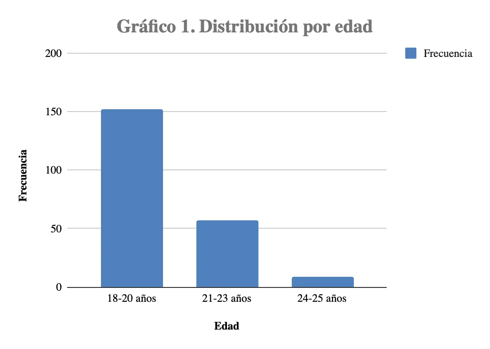
En relación a la facultad de pertenencia, la mayor participación se da por parte de la facultad de Diseño y Arquitectura con un porcentaje del 33.5%, seguido de la Facultad de Ciencias Económicas con un 30.3% y en último nivel de participación la Facultad de Ciencias de Salud.
Tabla 2. Distribución de la muestra por facultad (n=218)
| Facultad | Frecuencia | Porcentaje |
|---|---|---|
| FADI | 73 | 33.5% |
| FACO | 66 | 30.3% |
| FACE | 41 | 18.8% |
| FAIN | 17 | 7.8% |
| FAJU | 14 | 6.4% |
| FASA | 7 | 3.2% |
| Total | 218 | 100% |
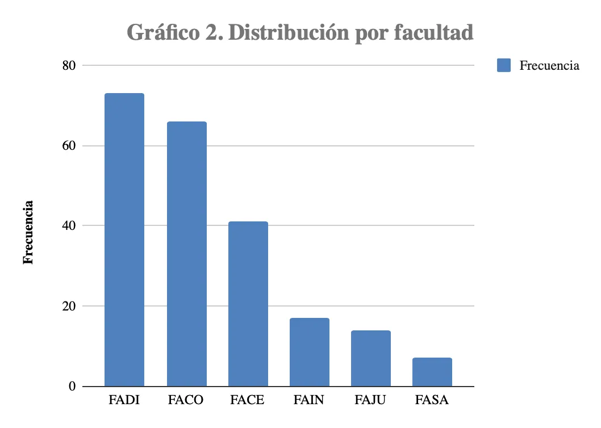
Luego de las variables sociodemográficas, se inició con el seguimiento de las variables de estudio en concreto. En primer lugar, la cantidad de horas diarias que los encuestados consumen TikTok. Los resultados reflejan una exposición intensiva a los entornos algorítmicos. Prácticamente 9 de cada 10 encuestadas (86.7%) destina más de una hora diaria a estas plataformas, destacándose un significativo 42.2% que reporta un uso superior a las 3 horas diarias. Este alto nivel de permanencia confirma que TikTok e Instagram funcionan como el ecosistema cotidiano primario donde estas jóvenes interactúan y consumen estímulos visuales.
Tabla 3. Horas de uso diario de TikTok/Instagram (n=218)
| Horas de uso | Frecuencia | Porcentaje |
|---|---|---|
| Menos de 1 hora | 13 | 6.0% |
| Entre 1 y 3 horas | 113 | 51.8% |
| Entre 3 y 5 horas | 76 | 34.9% |
| Más de 5 horas | 16 | 7.3% |
| Total | 218 | 100% |
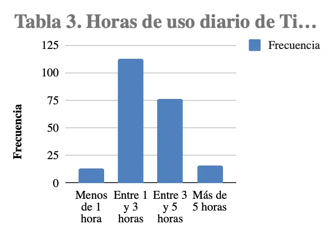
Prosiguiendo con las variables del estudio, se encuestó en relación a la frecuencia de consumo de videos del tipo Get Ready with me, este demuestra ser un contenido masivamente asimilado por esta población. Más del 86% de la muestra afirma consumir este tipo de videos con regularidad. Esta alta frecuencia válida la premisa de que la espectacularización de la rutina diaria privada se ha convertido en una narrativa de consumo habitual y normalizada entre las estudiantes.
Tabla 4. Frecuencia de consumo de videos GRWM (n=218)
| Frecuencia GRWM | Frecuencia | Porcentaje |
|---|---|---|
| Nunca | 7 | 3.2% |
| Casi nunca | 23 | 10.6% |
| A veces | 107 | 49.1% |
| Casi siempre | 65 | 29.8% |
| Siempre | 16 | 7.3% |
| Total | 218 | 100% |
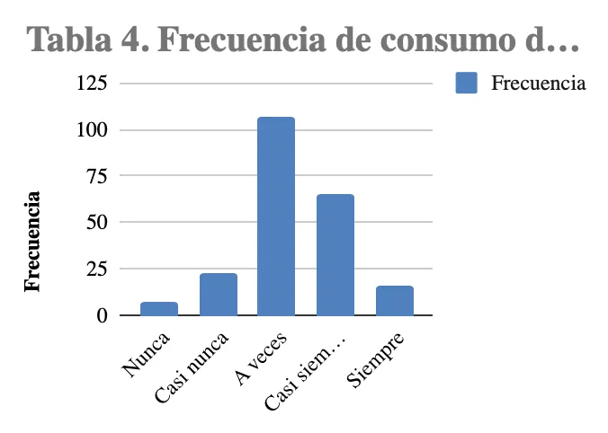
Para analizar en qué medida se adoptan las rutinas y estéticas mencionadas anteriormente, los datos confirman que la micro-tendencia de Clean Girl logra permear la barrera digital para instalarse en las prácticas físicas. Un contundente 72.5% de las encuestadas admite haber incorporado algún grado de la estética en su vida personal (desde "algo" hasta "casi todo"). Solo una minoría (27.5%) declara no haber sido influenciada por la tendencia, lo que subraya la eficacia de estas narrativas para reconfigurar la imagen personal.
Tabla 5. Adopción de rutinas Clean Girl (n=218)
| Nivel de adopción | Frecuencia | Porcentaje |
|---|---|---|
| No adopté nada | 60 | 27.5% |
| Adopté algo | 111 | 50.9% |
| Adopté bastante | 44 | 20.2% |
| Adopté casi todo | 3 | 1.4% |
| Total | 218 | 100% |
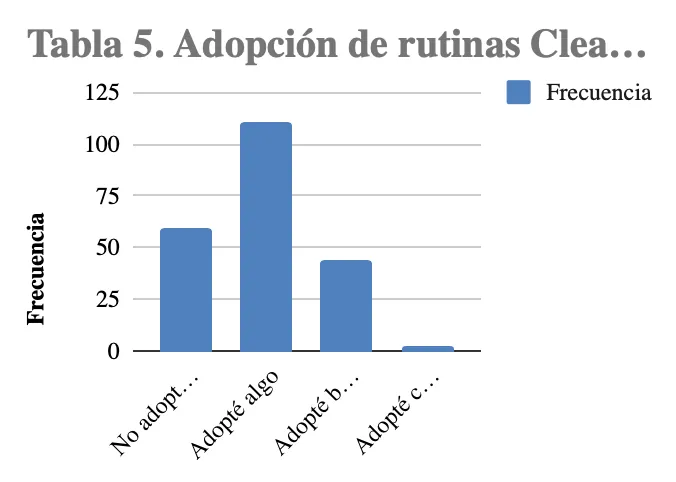
El impacto material del consumo digital es el hallazgo más sólido de la muestra. El 88.5% de las jóvenes adquirió al menos un artículo de moda o belleza en los últimos seis meses como resultado directo de una tendencia vista en redes sociales. Resulta especialmente relevante que casi la mitad de las encuestadas (46.3%) haya comprado 3 o más productos bajo esta influencia, demostrando que el consumo estético opera como un dinamizador económico constante.
Tabla 6. Artículos comprados motivados por tendencias en redes (n=218)
| Artículos comprados | Frecuencia | Porcentaje |
|---|---|---|
| 0 artículos (ninguno) | 25 | 11.5% |
| 1 a 2 artículos | 92 | 42.2% |
| 3 a 5 artículos | 60 | 27.5% |
| 6 o más artículos | 41 | 18.8% |
| Total | 218 | 100% |
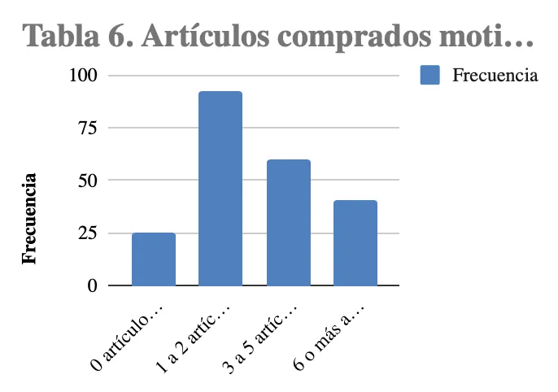
Las motivaciones impulsadas por el ecosistema digital superan ampliamente a la autonomía de compra. Sumando la visualización directa en el feed (38.7%), la recomendación de terceros o influencers (18.0%) y el seguimiento de una moda (11.5%), se observa que casi el 70% de las decisiones de compra están mediadas por la plataforma. Solo un 29.5% sostiene que sus adquisiciones responden a decisiones propias no influenciadas por las redes, lo que ratifica la fuerza de la curaduría digital sobre el consumo.
Tabla 7. Motivación principal de compra (n=218)
| Motivación | Frecuencia | Porcentaje |
|---|---|---|
| Lo vi en TikTok/Instagram y me gustó | 84 | 38.7% |
| Decisión propia, sin influencia de redes | 64 | 29.5% |
| Una persona que sigo lo recomendó | 39 | 18.0% |
| Era una tendencia de moda | 25 | 11.5% |
| Otras respuestas | 6 | 2.8% |
| Total | 218 | 100% |
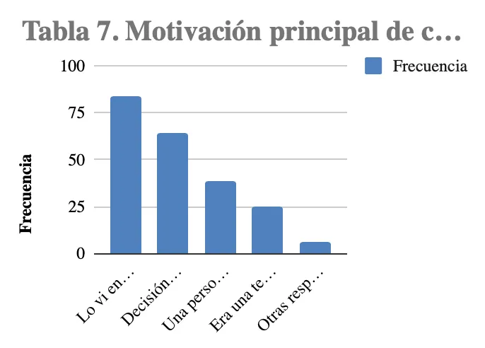
Frente a la necesidad de validación social, las respuestas muestran un comportamiento ambivalente. La opción mayoritaria recae en la neutralidad ("Ni de acuerdo ni en desacuerdo" con 36.2%), mientras que las posturas de acuerdo (26.6%) y desacuerdo (37.2%) se encuentran fraccionadas. Esta tendencia sugiere que las dinámicas de aprobación digital (como los likes o la presión estética) podrían estar tan internalizadas y naturalizadas en las rutinas de las usuarias que ya no se perciben como una imposición externa o una búsqueda consciente de validación.
Tabla 8. Validación social en redes (n=218)
| Nivel de acuerdo | Frecuencia | Porcentaje |
|---|---|---|
| Totalmente en desacuerdo | 37 | 17.0% |
| En desacuerdo | 44 | 20.2% |
| Ni de acuerdo ni en desacuerdo | 79 | 36.2% |
| De acuerdo | 41 | 18.8% |
| Totalmente de acuerdo | 17 | 7.8% |
| Total | 218 | 100% |
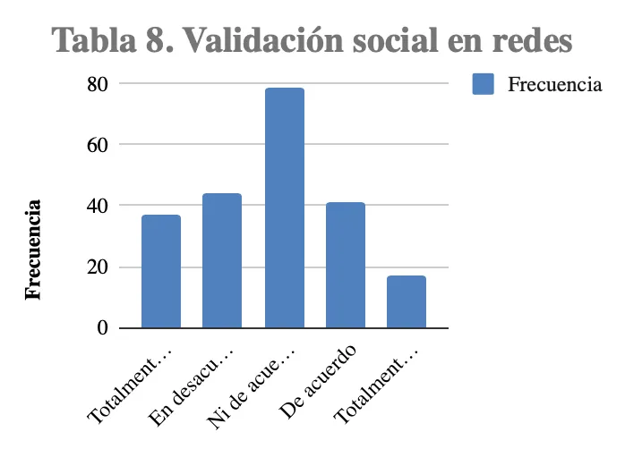
Luego de haber analizado de manera independiente algunas de las variables de estudio se propone realizar un análisis bivariado, cruzando las variables anteriormente establecidas. En primer lugar, al cruzar la edad con la adopción de esta micro-tendencia, se observa que el fenómeno es transversal a los distintos momentos de la trayectoria universitaria. Tanto en el segmento de ingresantes (18-20 años) como en las estudiantes cruzando aproximadamente el final de la carrera (21-23 años), la asimilación de la estética Clean Girl supera el 70%. En el grupo de 18-20 años, 110 de las 152 alumnas adoptaron al menos algún elemento de la rutina; un patrón casi idéntico se replica en el grupo de 21-23 años (43 de 57 alumnas). Esto demuestra que la tendencia no es exclusiva de las adolescentes más jóvenes, sino que se ha consolidado como un código visual generacional compartido dentro del entorno universitario.
Tabla 9. Cruce entre edad y adopción de rutinas Clean Girl (n=218)
| Adopté algo | Adopté bastante | Adopté casi todo | No adopté nada | Total | |
|---|---|---|---|---|---|
| 18-20 años | 78 | 30 | 2 | 42 | 152 |
| 21-23 años | 30 | 12 | 1 | 14 | 57 |
| 24-25 años | 3 | 2 | 0 | 4 | 9 |
| Total | 111 | 44 | 3 | 60 | 218 |
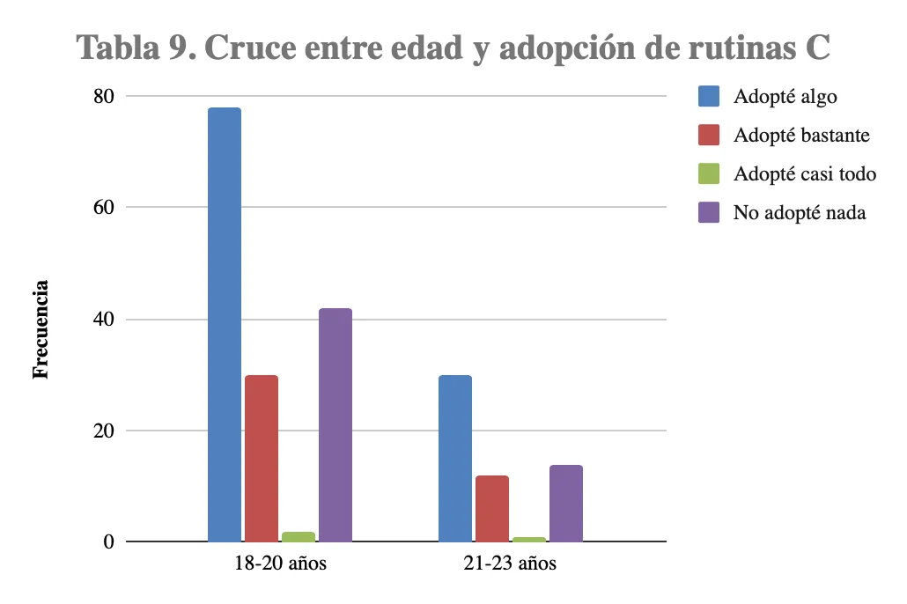
Al momento de realizar el cruce entre edad y artículos comprados motivados por redes, se encuentra algo sumamente particular. Este cruce evidencia que el impacto de las redes sociales sobre la cultura material mantiene su eficacia independientemente de la edad, aunque con ligeras variaciones en el volumen. En ambos grupos etarios principales (18-20 y 21-23 años), la absoluta mayoría ha concretado compras impulsadas por el ecosistema digital. No obstante, se advierte que el segmento de 21 a 23 años presenta una proporción levemente mayor en las categorías de alto consumo (3 a 5 artículos, y 6 o más), lo cual podría correlacionarse con un mayor poder adquisitivo o independencia económica a medida que avanzan en su etapa formativa o ingresan al mercado laboral, sosteniendo intacta la permeabilidad a la influencia algorítmica.
Tabla 10. Cruce entre edad y artículos comprados motivados por redes (n=218)
| 0 artículos | 1 a 2 artículos | 3 a 5 artículos | 6 o más | Total | |
|---|---|---|---|---|---|
| 18-20 años | 19 | 67 | 39 | 27 | 152 |
| 21-23 años | 4 | 22 | 20 | 11 | 57 |
| 24-25 años | 2 | 3 | 1 | 3 | 9 |
| Total | 25 | 92 | 60 | 41 | 218 |
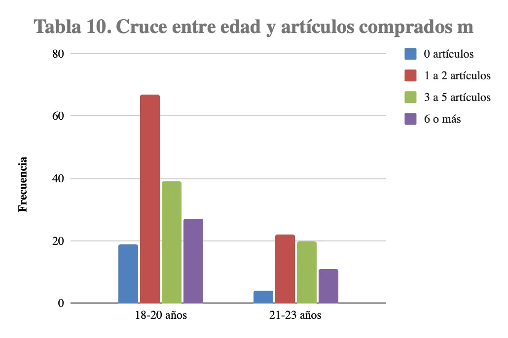
Esta tabla de contingencia muestra una de las correlaciones más significativas del estudio: a mayor tiempo de exposición a las plataformas, mayor es el volumen de consumo material. Entre las usuarias con bajo nivel de exposición (menos de 1 hora), casi la mitad (6 de 13) no realizó ninguna compra motivada por redes. En contraste dramático, a medida que aumentan las horas de uso, la categoría "0 artículos" disminuye drásticamente. En el segmento de máxima exposición (más de 5 horas diarias), el 100% de las encuestadas realizó compras impulsadas por tendencias, concentrándose fuertemente en la adquisición de múltiples artículos. Esto prueba empíricamente que el algoritmo de estas plataformas funciona como un motor directo de conversión económica.
Tabla 11. Cruce entre horas de uso y artículos comprados (n=218)
| 0 artículos | 1 a 2 artículos | 3 a 5 artículos | 6 o más | Total | |
|---|---|---|---|---|---|
| Menos de 1 hora | 6 | 5 | 1 | 1 | 13 |
| Entre 1 y 3 horas | 14 | 49 | 33 | 17 | 113 |
| Entre 3 y 5 horas | 5 | 28 | 24 | 19 | 76 |
| Más de 5 horas | 0 | 10 | 2 | 4 | 16 |
| Total | 25 | 92 | 60 | 41 | 218 |
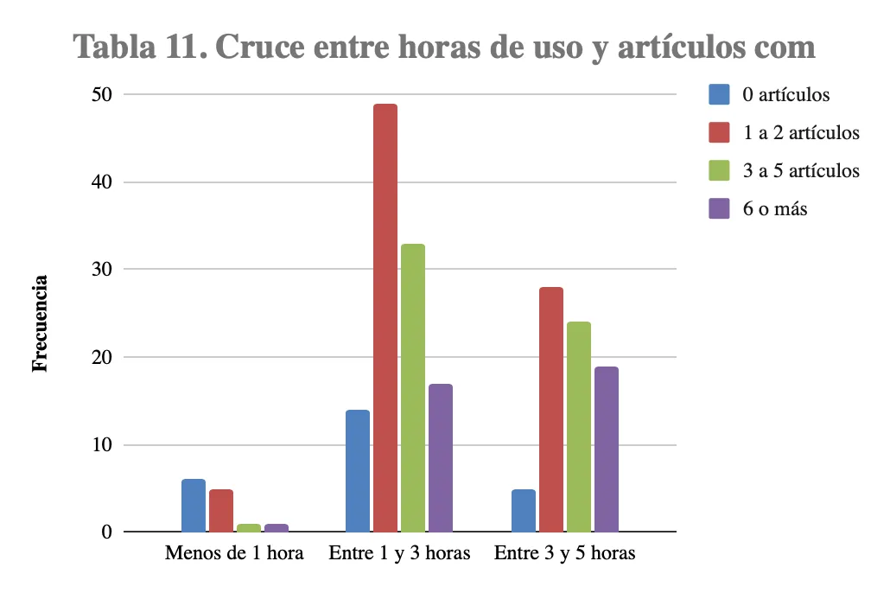
En relación con el cruce anterior, la intensidad de navegación guarda una relación directa con la adopción de prácticas estéticas específicas. En el grupo de menor uso (menos de 1 hora), la mayoría (8 de 13) afirma no haber adoptado nada de la estética Clean Girl. A la inversa, en los segmentos de exposición moderada y alta (1 a 3 horas, y 3 a 5 horas), la asimilación de la tendencia se dispara, abarcando a la inmensa mayoría de las encuestadas en esos rangos. Este dato permite afirmar que la reiteración visual constante a la que somete el algoritmo es el mecanismo fundamental para la normalización e internalización de los estándares estéticos en la vida física.
Tabla 12. Cruce entre horas de uso y adopción de rutinas Clean Girl (n=218)
| Adopté algo | Adopté bastante | Adopté casi todo | No adopté nada | Total | |
|---|---|---|---|---|---|
| Menos de 1 hora | 5 | 0 | 0 | 8 | 13 |
| Entre 1 y 3 horas | 65 | 15 | 0 | 33 | 113 |
| Entre 3 y 5 horas | 33 | 23 | 3 | 17 | 76 |
| Más de 5 horas | 8 | 6 | 0 | 2 | 16 |
| Total | 111 | 44 | 3 | 60 | 218 |
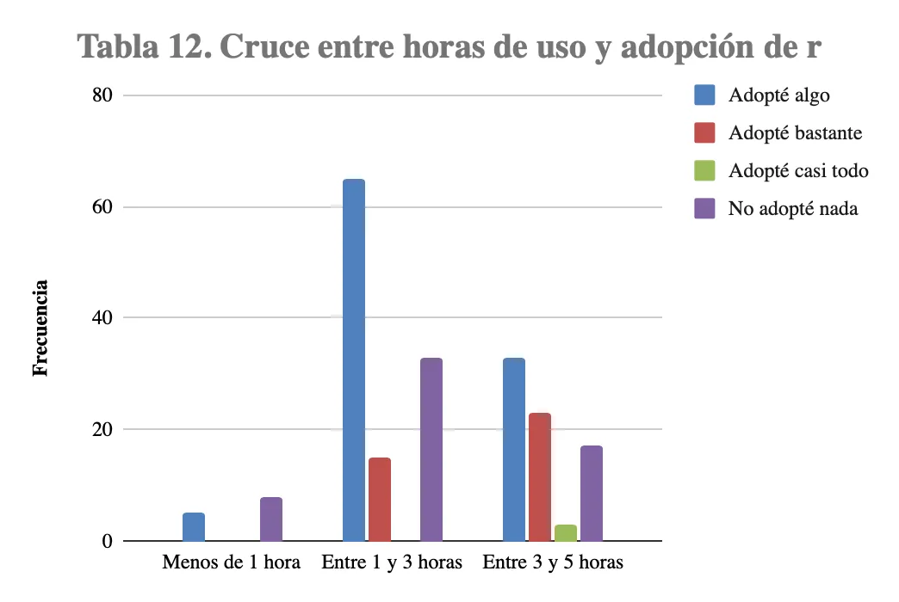
Al cruzar el consumo específico del formato Get Ready With Me con la motivación de compra, se devela el carácter persuasivo de estas narrativas. Las encuestadas que consumen este formato con alta frecuencia ("Casi siempre" o "Siempre") señalan abrumadoramente que sus compras están motivadas por lo que ven en las plataformas y por las recomendaciones de las personas a las que siguen, relegando a un segundo plano la "decisión propia". En cambio, quienes nunca ven GRWM compran mayoritariamente por decisión propia. Esto corrobora que el formato GRWM opera de manera encubierta como una poderosa herramienta de publicidad nativa, donde la simulación de intimidad y el consejo cotidiano logran dirigir las decisiones de consumo de la audiencia.
Tabla 13. Cruce entre frecuencia GRWM y motivación de compra (n=218)
| TikTok/Instagram | Decisión propia | Persona que sigo | Tendencia de moda | Total | |
|---|---|---|---|---|---|
| Nunca | 2 | 5 | 0 | 0 | 7 |
| Casi nunca | 9 | 8 | 4 | 1 | 22 |
| A veces | 41 | 29 | 18 | 15 | 103 |
| Casi siempre | 25 | 17 | 14 | 8 | 64 |
| Siempre | 7 | 5 | 3 | 1 | 16 |
| Total | 84 | 64 | 39 | 25 | 212 |
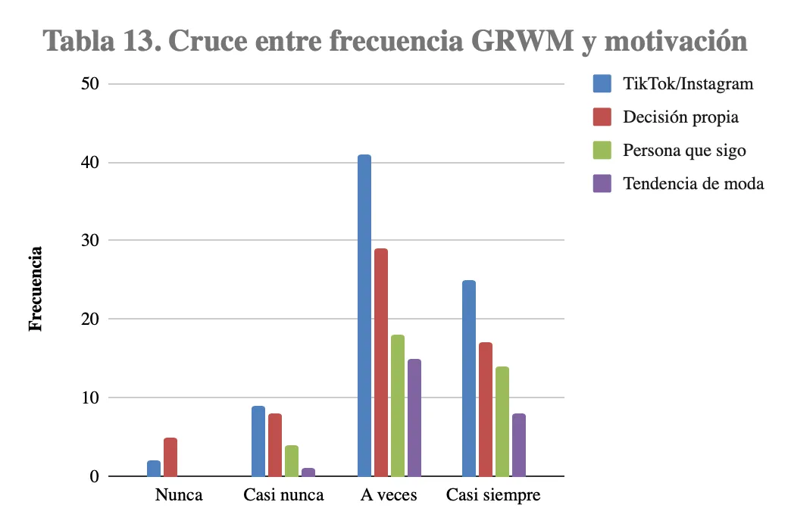
Este análisis revela una interesante disonancia entre el discurso consciente y la práctica material. Si bien las estudiantes que aceptan explícitamente buscar validación social ("De acuerdo" y "Totalmente de acuerdo") presentan altos niveles de consumo (ninguna usuaria de este último grupo registró "0 compras", y la mayoría adquirió 3 o más artículos), aquellas que afirman ser neutrales o estar en desacuerdo también exhiben niveles sustanciales de adquisición de productos. Por ejemplo, en el grupo de las 79 encuestadas "neutrales", 74 de ellas concretaron compras motivadas por las redes. Esto sugiere que el ecosistema digital moldea los hábitos de compra de manera transversal, operando incluso sobre aquellas usuarias que perciben y declaran tener total autonomía y desinterés por la aprobación externa.
Tabla 14. Cruce entre validación social y artículos comprados (n=218)
| 0 artículos | 1 a 2 artículos | 3 a 5 artículos | 6 o más | Total | |
|---|---|---|---|---|---|
| Totalmente en desacuerdo | 10 | 14 | 9 | 4 | 37 |
| En desacuerdo | 5 | 21 | 10 | 8 | 44 |
| Ni de acuerdo ni en desacuerdo | 5 | 39 | 23 | 12 | 79 |
| De acuerdo | 5 | 12 | 13 | 11 | 41 |
| Totalmente de acuerdo | 0 | 6 | 5 | 6 | 17 |
| Total | 25 | 92 | 60 | 41 | 218 |
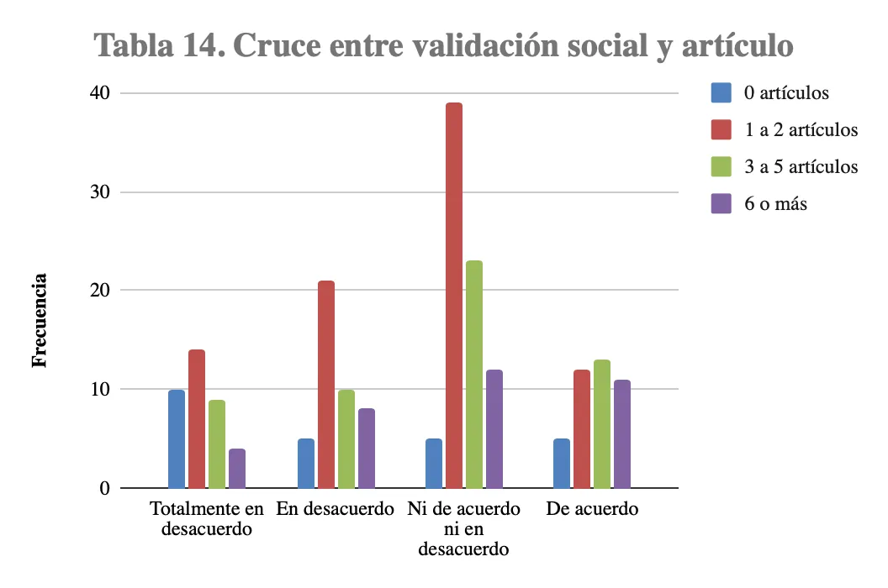
Discusión
Habiendo finalizado con el relevamiento de información y exposición de los datos obtenidos es que podemos poner en discusión dichos datos con lo evidenciado en el marco teórico impuesto. Para ello se tomarán tres ejes centrales de discusión: el espacio privado como escenario, la pantalla como moldeadora de la materia y por último, el consumir para pertenecer.
En primer lugar, dentro del análisis realizado se entiende que la habitación y los espacios íntimos como el baño dejan de funcionar como espacios tras bambalinas sino que este es reconfigurado para ser el espacio principal en el cual se mueven los jóvenes en redes. Basándonos en los datos obtenidos, los videos de GRWM (como la ficha 1 o la 9) transcurren en habitaciones pulcras y ordenadas. En las encuestas (Tabla 4), el 86% consume este formato. Este aspecto y orden estético confirma la teoría de Erving Goffman, demostrando que el ecosistema digital ha provocado que los espacios históricamente considerados como la "región posterior" (la intimidad donde uno se relaja) se transformen en una "región frontal" de exhibición escénica. Así mismo es importante mencionar que las creadoras logran que dicha exhibición parezca genuina vinculando así con la idea de "intimidad calibrada" planteada por Crystal Abidin. El formato Get Ready With Me oculta la espectacularización detrás de una falsa espontaneidad, haciendo que el espectador sienta que está viendo algo cotidiano y no una performance. La altísima frecuencia con la que las estudiantes universitarias consumen este formato (como demostró el análisis cuantitativo presentado con anterioridad) prueba que esta espectacularización de lo privado se ha normalizado por completo, sentando las bases para el consumo material que viene después.
En segundo lugar, mediante la investigación realizada se entiende que las pantallas y los ecosistemas digitales moldean ampliamente la realidad y la materia. La exposición algorítmica constante satura la realidad de las estudiantes con imágenes y signos, empujándolas a convertir sus propias vidas físicas y sus compras materiales en un proyecto estético autónomo. La estética sale de la pantalla y coloniza la materia. Esto se logra evidenciar mediante la fuerte correlación encontrada en el análisis bivariado respecto al tiempo de uso y el consumo. Las Tablas 11 y 12 demostraron de forma contundente que a mayor cantidad de horas en TikTok, hay una mayor adopción física de la estética Clean Girl y más compras de artículos de moda/belleza. Este fenómeno de trasladar los códigos visuales de las redes a las decisiones de compra físicas se enmarca perfectamente en el concepto de "estetización de la vida cotidiana" desarrollado por Mike Featherstone. Según el autor la saturación de imágenes y signos dentro de la cultura posmoderna lleva a los jóvenes a transformar su vida y convertirla en un “proyecto estético autónomo”. De esta manera ya no solo se trata de ver videos, sino que también de asimilar un canon visual que exige ser replicado en el mundo tangible. Teniendo en cuenta lo establecido, se puede decir que la estética digital abandona los límites de la pantalla para colonizar lo material, así convirtiendo el consumo impulsado por el algoritmo en el puente necesario para volverse real y tangible.
En tercer y último lugar, se establece que existe una gran disonancia entre el discurso y la práctica en tanto al consumir como mecanismo de pertenencia. Los datos de las encuestas evidenciaron dicha disconcordancia tal y como demostró la Tabla 14, la mayoría de las encuestadas afirma ser "neutral" o estar "en desacuerdo" con la búsqueda de validación social, pero al mismo tiempo, ese mismo grupo registra altos niveles de adquisición de productos exhibidos en redes (como se vio en el protagonismo de las marcas en las unidades documentales P5 y P7). Este fenómeno puede comprenderse de mejor manera si tomamos en cuenta los planteos de Zygmunt Bauman. Según el autor, dentro del marco de la modernidad líquida, la identidad de los jóvenes dejó de ser algo dado y establecido para convertirse en un proyecto de curaduría digital constante, ya que estos necesitan diseñar y rediseñar su imagen constantemente para no quedar excluidos de las dinámicas de visibilidad. En añadidura, Jean Baudrillard, otro de los autores presentados en el marco teórico explica qué significa realmente esta compra de cosméticos o ropa impulsada por el entorno digital. En este caso, la adopción de la tendencia Clean Girl responde estrictamente a un consumo simbólico ya que los productos no se consumen por su valor de uso o de cambio, sino por su "valor de signo" funcionando como marcadores que comunican estatus, pulcritud y pertenencia a una comunidad estética global. Teniendo en cuenta lo analizado hasta el momento se puede comprender que la dinámica algorítmica es tan persuasiva que ha logrado naturalizar la presión estética. Las universitarias consumen signos para pertenecer y encajar en el estándar digital, pero este mandato está tan asimilado en sus prácticas cotidianas que ya no lo perciben como una imposición externa o una búsqueda de aprobación, sino como una simple "elección personal".
Reflexiones del trabajo
La presente investigación permitió esclarecer los mecanismos a través de los cuales las plataformas algorítmicas, específicamente TikTok e Instagram, operan como agentes socializadores y moldeadores de la cultura material contemporánea. El abordaje metodológico mixto arrojó hallazgos contundentes que articulan la dimensión digital con la materialidad de la vida cotidiana de las estudiantes universitarias.
En primer lugar, desde el análisis documental, se comprobó empíricamente la reconfiguración del espacio privado. Las rutinas de lifestyle y el formato Get Ready With Me (GRWM) han erosionado las fronteras tradicionales entre la intimidad y la exhibición pública. La habitación y el cuarto de baño han dejado de ser "regiones posteriores" de resguardo para transformarse en escenarios estéticos milimétricamente estructurados, bajo los códigos visuales de la tendencia Clean Girl (paletas neutras, luminosidad, orden minimalista). Esta espectacularización se sostiene sobre una narrativa de "intimidad calibrada", donde las creadoras de contenido simulan espontaneidad para generar cercanía y empatía, ocultando el carácter inherentemente performático y publicitario de sus videos.
En segundo lugar, el análisis cuantitativo sobre la muestra de alumnas evidenció que la estética digital posee una capacidad colonizadora sobre la materia. Se comprobó una correlación directa y proporcional entre el tiempo de exposición a los ecosistemas digitales y el volumen de adquisición de bienes físicos. Casi el 90% de las encuestadas materializó su consumo visual mediante la compra de artículos de moda y cosmética impulsados por las redes, demostrando que el algoritmo funciona como un dinamizador económico ineludible.
Por último, se halló una profunda disonancia entre el discurso consciente de las jóvenes y sus prácticas materiales. Si bien la mayoría de la población estudiada niega o adopta una postura neutral frente a la necesidad de buscar validación social en redes, sus hábitos de consumo revelan una fuerte asimilación de los mandatos algorítmicos. Las estudiantes consumen productos no por su valor utilitario, sino por su "valor de signo", utilizándolos como marcadores semióticos para comunicar pertenencia, orden y estatus dentro de una comunidad estética globalizada. La presión digital se encuentra tan naturalizada que opera de manera invisible, percibiéndose erróneamente como una elección estilística individual.
A lo largo del proceso investigativo, se ha dado cumplimiento efectivo a la totalidad de los objetivos planteados inicialmente:
Comenzando con el objetivo de identificar los códigos estéticos, visuales y discursivos, el mismo fue alcanzado mediante la aplicación del método de análisis documental sobre las unidades de TikTok e Instagram. Se logró sistematizar y describir con precisión los elementos cromáticos, morfológicos y narrativos que componen el formato GRWM y la estética Clean Girl.
En segunda instancia, se dio cumplimiento al objetivo de describir la incorporación de dichos códigos en decisiones de compra y gestión de imagen a través de la encuesta estandarizada, cuyos cruces bivariados permitieron cuantificar de manera exacta cómo la exposición a las pantallas se traduce en modificaciones concretas de la apariencia personal y en el incremento sostenido de la adquisición de bienes de consumo (indumentaria y skincare).
Continuando, el objetivo de determinar si la adopción responde a una búsqueda de validación social y pertenencia, se alcanzó mediante el cruce de los datos cuantitativos con el marco teórico de la sociología del consumo (Bauman, Baudrillard, Goffman), permitiendo concluir que el consumo simbólico funciona efectivamente como un mecanismo de integración grupal en el ecosistema universitario, aun cuando dicho mecanismo opere desde la negación consciente.
A partir de la evidencia teórica y empírica recolectada, se valida afirmativamente la hipótesis de trabajo. Se comprueba de manera concluyente que la exposición frecuente a narrativas visuales de lifestyle y a micro-tendencias algorítmicas (como la estética Clean Girl en TikTok e Instagram) genera una transformación profunda y cuantificable en las prácticas de consumo estético y en la construcción de la identidad personal de las estudiantes mujeres de UADE sede Montserrat (18-24 años) durante el período estudiado. La virtualidad no se reduce a un espacio de entretenimiento pasivo, sino que constituye el eje rector de la curaduría material, estética e identitaria de la población analizada.
En cuanto a sus alcances, este estudio logró aportar evidencia empírica situada y específica sobre un fenómeno global, cubriendo una vacancia de conocimiento en el contexto universitario porteño. Proporciona, además, herramientas analíticas valiosas para comprender la intersección contemporánea entre el diseño de indumentaria, la gestión de estéticas y la comunicación digital.
Sin embargo, la investigación presenta ciertas limitaciones metodológicas. La utilización de un muestreo no probabilístico por conveniencia implica que los resultados, si bien son indicativos de fuertes tendencias socioculturales, no resultan estadísticamente generalizables al total de la población universitaria argentina. Asimismo, el enfoque transversal restringe la observación a un momento temporal específico (2025-2026), lo cual dificulta medir la obsolescencia o perdurabilidad de la tendencia a largo plazo. Además, el carácter estructurado de las encuestas limitó la posibilidad de explorar con mayor profundidad psicológica las motivaciones inconscientes detrás de la disonancia cognitiva observada en torno a la validación social.
A partir de estos hallazgos y limitaciones, se proponen las siguientes futuras líneas de investigación. En primer lugar, estudios longitudinales de consumo algorítmico. Investigaciones que rastreen a una misma cohorte de estudiantes a lo largo de varios años para evaluar cómo la rotación acelerada de micro-tendencias (el reemplazo de la Clean Girl por nuevas narrativas visuales) impacta en el ciclo de vida de los productos físicos y en la generación de desechos textiles. En segundo lugar, los abordajes cualitativos en profundidad. La implementación de entrevistas semiestructuradas o grupos focales (focus groups) para indagar discursivamente en la paradoja de la validación social, permitiendo a las usuarias reflexionar sobre las tensiones entre su identidad genuina y la presión asimilada del entorno digital. Por último y no menos importante, el análisis comparativo de estéticas divergentes. Investigaciones empíricas que contrasten la adopción de estéticas minimalistas/ordenadas frente a micro-tendencias maximalistas o disruptivas, para comprender si los mecanismos de espectacularización de la vida cotidiana varían según los valores simbólicos que promueve cada subcultura digital.
Referencias bibliográficas
Abidin, C. (2018). Internet celebrity: Understanding fame online. Emerald Publishing Limited. https://books.google.com.ar/books?hl=es&lr=&id=luRiDwAAQBAJ&oi=fnd&pg=PR1&dq=Abidin,+C.+(2018).+Internet+Celebrity:+Understanding+Fame+Online.+Emerald+Group+Publishing++&ots=KNbY0xN0Nv&sig=mo_e10mCARtQU-Mi_eullfcqYws&redir_esc=y#v=onepage&q=Abidin%2C%20C.%20(2018).%20Internet%20Celebrity%3A%20Understanding%20Fame%20Online.%20Emerald%20Group%20Publishing&f=false
Alves, B. M. F. (2024). Aesthetics digitales e identidad juvenil en plataformas de redes sociales [Tesis de grado/posgrado, Universidade Federal do Rio de Janeiro]. Repositorio Pantheon UFRJ. https://pantheon.ufrj.br/handle/11422/26806
Banet-Weiser, S. (2012). Authentic™: The politics of ambivalence in a brand culture. New York University Press. https://nyupress.org/9780814787144/authentic/
Baudrillard, J. (2009). La sociedad de consumo: Sus mitos, sus estructuras. Siglo XXI de España Editores. https://books.google.com.ar/books?id=JXAQEQAAQBAJ
Bauman, Z. (2007). Identidad y variedad en la sociedad líquida. Espiral: Estudios sobre Estado y Sociedad, 14(40), 187-213. https://www.scielo.org.mx/pdf/espiral/v14n40/v14n40a7.pdf
Featherstone, M. (2000). Cultura de consumo y posmodernismo. Editorial Amorrortu. https://books.google.com.ar/books?id=15__7hPkpIEC
Goffman, E. (1959). The presentation of self in everyday life. Anchor Books. http://educ333b.pbworks.com/w/file/fetch/53313682/goffman_intro.pdf
Guadamud Roldán, M. Y., Cedeño Guerra, M. S., Piloso Toledo, I. E., Saltos Cedeño, B. M., & Indacochea Quimís, C. A. (2025). Uso de TikTok en la construcción de identidad cultural en estudiantes de básica media. Estudios y Perspectivas. Revista Científica y Académica, 5(3), 3467–3486. https://estudiosyperspectivas.org/index.php/EstudiosyPerspectivas/article/view/1414
Kirsch, A., & Vargas, N. (2024). El impacto de los influencers y las redes sociales en la formación de identidad de la juventud panameña. Revista Semilla Científica. https://revistas.umecit.edu.pa/index.php/sc/article/view/1372
Ortuño Sepúlveda, A. E. (2023). Vínculos entre la percepción de los jóvenes de 17 a 22 años sobre los ideales de belleza mostrados en las redes sociales Instagram/TikTok y la incidencia en la creación de su contenido. Punto Cero. https://puntocero.ucb.edu.bo/a/article/view/102
Simmel, G. (1938). Filosofía de la moda. Universidad Nacional de Córdoba. (Trabajo original publicado en 1905). https://sguweb.unicentro.br/app/webroot/arquivos/atsubmissao/A_FILOSOFIA_DA_MODA_EM_GEORG_SIMMEL.pdf
Virós-Martín, C., Jiménez-Morales, M., & Montaña-Blasco, M. (2025). Adolescentes, TikTok e Instagram: percepciones sobre el impacto de las tecnologías digitales en su vida social. Revista de Comunicación, 24(1), 519–537. https://doi.org/10.26441/RC24.1-2025-3774
Vizcaíno-Verdú, A. (2025). Get ready with me for school: Childhood and adolescence commercialization through branded beauty videos on TikTok. Young Consumers. https://www.emerald.com/yc/article-abstract/doi/10.1108/YC-11-2025-2811/1361825/
Anexo 1 : Matriz de operacionalización de variables
| Variable | Definición conceptual | Definición operacional | Dimensiones | Indicadores | Nivel de medición | Escala de medición | Tipo de escala |
|---|---|---|---|---|---|---|---|
| 1. Contenidos de lifestyle y micro-tendencias | Narrativas audiovisuales digitales que exhiben rutinas, estilos de vida y estéticas particulares (como "Clean Girl" o GRWM) promoviendo estándares visuales. | Frecuencia, tiempo de exposición y tipos de formatos de lifestyle que consumen los estudiantes en las plataformas TikTok e Instagram. | 1. Consumo de plataformas 2. Consumo de formatos específicos | - Frecuencia de visualización de videos GRWM. - Frecuencia de visualización de Hauls. - Frecuencia de consumo de videos "Clean Girl" o Daily Vlogs. | Ordinal Ordinal / Nominal | De frecuencias (Ej: Menos de 1 hora, 1-3 horas, Más de 3 horas) Likert de frecuencia (Nunca, A veces, Casi siempre, Siempre) | Cualitativa ordinal |
| 2. Prácticas estéticas y de moda | Acciones, hábitos de consumo material y adopción de códigos visuales que los jóvenes aplican sobre su indumentaria, rutinas y entorno personal. | Cambios declarados en los hábitos de compra, adopción de vestimenta específica y modificación de rutinas/espacios físicos orientados a la estética digital. | 2. Rutinas estéticas personales 3. Estetización del espacio privado | - Frecuencia de compra de productos/ropa motivada por una tendencia de redes. - Nivel de adopción de rutinas de skincare/maquillaje estilo "Clean Girl". - Frecuencia con la que se ordena/decora el cuarto/entorno con el fin de fotografiarlo o grabarlo. | Ordinal Ordinal Ordinal | Likert de frecuencia (Nunca a Siempre) Likert de grado de adopción Likert de frecuencia | Cualitativa ordinal |
| 3. Identidad digital y validación social (Se desprende de su Hipótesis y Obj. 3) | Proceso mediante el cual los jóvenes construyen y exhiben una imagen curada de su vida para obtener aceptación y sentir pertenencia digital. | Grado de importancia otorgada a la percepción de los demás en redes y el nivel de exhibición voluntaria de la vida privada. | 1. Búsqueda de validación 2.Espectacularización de lo cotidiano | - Grado de acuerdo con la frase: "Me importa que mis seguidores aprueben mi estilo/estética". - Frecuencia de publicación de fotos/videos de rutinas diarias (ej. el café de la mañana, el outfit, el espacio de estudio). | Ordinal Ordinal | Likert de nivel de acuerdo (Totalmente en desacuerdo a Totalmente de acuerdo) De frecuencias | Cualitativa ordinal |
| Hábitos de compra | Patrones de adquisición de productos y bienes materiales de moda y belleza. | Acciones de consumo declaradas, motivadas por la influencia de contenidos digitales. | Comportamiento de consumo | - Frecuencia de compra. - Motivación de la compra (influencia de micro-tendencia). | ordinal | Escala de frecuencia (Nunca, A veces, Frecuentemente, Siempre). | cualitativa ordinal |
| Horas diarias de uso de Tik Tok/Instagram. | Intensidad de la exposición temporal del sujeto a las plataformas seleccionadas. | Cantidad de tiempo promedio por día que el usuario dedica a navegar en estas redes. | Intensidad de uso | Tiempo de permanencia diaria | ordinal | Menos de 1 hora; Entre 1 y 3 horas; Entre 3 y 5 horas; Más de 5 horas. | Cualitativa ordinal |
| Facultad | Unidad académica de pertenencia del estudiante dentro de la universidad. | Tiempo transcurrido desde el nacimiento expresado en años. | institucional | Carrera / Facultad de pertenencia. | Nominal | Listado de facultades (ej. Arquitectura y Diseño, Cs. de la Comunicación, etc.) | Cualitativa nominal |
| Edad | Edad cronológica declarada por el encuestado dentro del rango de interés. | cronológica | Años cumplidos. | De razón | 18-24 | Cuantitativa discreta | |
Anexo 2: Cuestionario
¿Cuántos años tenés?
18-20 años
21-23 años
24-25 años
¿En qué facultad estudias?
FACO
FASA
FAIN
FAJU
FADI
FACE
¿Cuántas horas por día usás TikTok o Instagram en promedio?
Menos de 1 hora
Entre 1 y 3 horas
Entre 3 y 5 horas
Más de 5 horas
¿Qué plataforma usás más para consumir contenido de estilo de vida y tendencias?
Tik tok
Instagram
Ambas por igual
Ninguna de las dos
Otros:
¿Con qué frecuencia ves videos tipo GRWM ("Get Ready With Me") en TikTok o Instagram?
Nunca
Casi nunca
A veces
Casi siempre
Siempre
¿Con qué frecuencia ves videos de hauls (compras de ropa, productos de belleza, etc.)?
Nunca
Casi nunca
A veces
Casi siempre
Siempre
¿Con qué frecuencia consumís contenido del estilo "Clean Girl" o daily vlogs?
Nunca
Casi nunca
A veces
Casi siempre
Siempre
¿Adoptaste rutinas de skincare o maquillaje inspiradas en el estilo "Clean Girl" o tendencias similares de redes?
No adopté nada
Adopté algo
Adopté bastante
Adopté casi todo
¿Con qué frecuencia ordenás, decoras o cambiás tu cuarto/entorno con el objetivo de fotografiarlo o grabarlo?
Nunca
Casi nunca
A veces
Casi siempre
Siempre
Pensando en los últimos 6 meses, ¿aproximadamente cuántos artículos (ropa, accesorios, maquillaje o skincare) compraste motivado/a por una tendencia que viste en redes sociales?
0 artículos (ninguno)
1 a 2 artículos
3 a 5 artículos
6 o más artículos
Cuando comprás ropa o productos de belleza, ¿cuál es tu principal motivación?
Lo vi en TikTok o Instagram y me gustó
Una persona que sigo lo usó o recomendó
Era una tendencia que estaba "de moda"
La compra fue por decisión propia, sin influencia de redes
Otros:
"Me importa que mis seguidores aprueben mi estilo o estética en redes."
Totalmente de acuerdo
De acuerdo
Ni de acuerdo ni en desacuerdo
En desacuerdo
Totalmente en desacuerdo
¿Cuántos contenidos subís a tus redes sociales en el mes?
Entre 1-5 contenidos por mes
Entre 5 y 10 por mes
Entre 10 y 20
Más de 20
"Cuido la forma en que me muestro en redes para que mi perfil se vea estético y coherente."
Totalmente de acuerdo
De acuerdo
Ni de acuerdo ni en desacuerdo
En desacuerdo
Totalmente en desacuerdo
Anexo 3: Fichas análisis documental
Ficha 1
| Campo | Datos de la publicación |
|---|---|
| ID (identificación) | P1 |
| Plataforma | Tik Tok |
| Cuenta/Creadora | @andreaiescorcia |
| Fecha de Publicación | 06/03/2026 |
| Reproducciones | 860.100 |
| Likes | 234.600 |
| Comentarios | 291 |
| Formato | GRWM/vlog |
| Códigos Estéticos | Paleta de colores pastel, predominio del rosa y blanco. Indumentaria en 3 momentos: inicio del video con pijamas a rayas, luego set deportivo amarillo pastel para actividad física (pilates) y ropa "basic" para el resto del día. Puesta en escena cuidada y luminosa, coherente con los estándares visuales de la estética Clean Girl. |
| Códigos Visuales | Estilo de grabación cercano al formato YouTube (planos más largos, ritmo pausado). Iluminación natural o simulada, que refuerza la sensación de cotidianeidad. |
| Códigos Discursivos | Texto en pantalla utilizado como recurso narrativo para marcar horarios y ubicaciones (ej: estudio de pilates). Construcción de una rutina diaria ordenada y aspiracional. |
| Mención de marcas/productos | No |
| Observaciones | El video construye una narrativa de "día productivo y equilibrado" que articula actividad física, estética personal y organización del tiempo, ideas centrales de la estética Clean Girl. |
Ficha 2
| Campo | Datos de la publicación |
|---|---|
| ID (identificación) | P2 |
| Plataforma | Tik Tok |
| Cuenta/Creadora | @lizbethponceh |
| Fecha de Publicación | 20/10/2025 |
| Reproducciones | 204.000 |
| Likes | 23.100 |
| Comentarios | 234 |
| Formato | GRWM |
| Códigos Estéticos | Paleta de colores bicolor: negro (outfit) y blanco (fondo). Indumentaria elegante y de marcas reconocidas, orientada a un evento social específico (recital). Estética que mezcla lo minimalista con lo glamoroso, manteniendo la lógica de producción del GRWM |
| Códigos Visuales | Fondo blanco neutro que centra la atención en la creadora y su outfit. Encuadre medio-corto. Texto en pantalla únicamente al inicio para presentar el formato (#GRWM). |
| Códigos Discursivos | Texto en pantalla únicamente al inicio para presentar el formato (#GRWM) |
| Mención de marcas/productos | Si: vestido Meshki, medias Target, perfume Juliette Has a Gun |
| Observaciones | A diferencia del P1, este video integra de manera explícita el consumo de marcas dentro de la narrativa del GRWM, lo que lo acerca al marketing de influencers. La elección del evento (recital de Alejandro Fernández) ancla el contenido en una identidad cultural latinoamericana específica. |
Ficha 3
| Campo | Datos de la publicación |
|---|---|
| ID (identificación) | P3 |
| Plataforma | Tik Tok |
| Cuenta/Creadora | @paaulizi |
| Fecha de Publicación | 28/03/2026 |
| Reproducciones | 394.000 |
| Likes | 62.200 |
| Comentarios | 139 |
| Formato | GRWM |
| Códigos Estéticos | Paleta bicolor: negro (outfit y uñas) y blanco (fondo). Indumentaria oscura y sobria. Estética más cotidiana y menos aspiracional que P1 y P2, centrada en la autenticidad del relato personal. |
| Códigos Visuales | Fondo blanco neutro. Subtítulos en español integrados al video como recurso de accesibilidad y dinamismo visual. Sin texto decorativo adicional. |
| Códigos Discursivos | Narración en primera persona sobre la vida cotidiana de la creadora (curso de azafata, preparación para un examen). Sin mención de marcas. El video apela a la identificación y empatía de la audiencia a través de experiencias compartidas (el estrés del estudio, los logros personales). |
| Mención de marcas/productos | No |
| Observaciones | Este video representa una variante del GRWM más centrada en el relato vital que en el consumo estético. La ausencia de marcas y el foco en la experiencia personal construyen una sensación de autenticidad que, paradójicamente, también es una estrategia discursiva del formato. |
Ficha 4
| Campo | Datos de la publicación |
|---|---|
| ID (identificación) | P4 |
| Plataforma | Tik Tok |
| Cuenta/Creadora | @guiua |
| Fecha de Publicación | 17/11/2025 |
| Reproducciones | 148.500 |
| Likes | 17.400 |
| Comentarios | 62 |
| Formato | GRWM |
| Códigos Estéticos | Predominio del rosa fuerte tanto en la vestimenta como en las uñas, creando una estética vibrante. La puesta en escena integra el armado del neceser de viaje como elemento narrativo visual, dotando al video de dinamismo y practicidad. |
| Códigos Visuales | Sin texto en pantalla ni voz en off. La narrativa se sostiene únicamente a través de la imagen y el relato oral del creador |
| Códigos Discursivos | Narración en primera persona centrada en vivencias personales (preparándose para un viaje a Seúl, Corea). Sin mención de marcas ni productos específicos. El video construye una narrativa aspiracional basada en la experiencia de vida y el viaje internacional, apelando a la identificación de una audiencia joven con aspiraciones globales. |
| Mención de marcas/productos | No |
| Observaciones | El video combina el formato GRWM con el género del travel vlog, ampliando la narrativa estética hacia un horizonte de movilidad y experiencia cultural. |
Ficha 5
| Campo | Datos de la publicación |
|---|---|
| ID (identificación) | P5 |
| Plataforma | Tik Tok |
| Cuenta/Creadora | @angwatters |
| Fecha de Publicación | 10/4/2026 |
| Reproducciones | 185.700 |
| Likes | 44.000 |
| Comentarios | 248 |
| Formato | GRWM |
| Códigos Estéticos | Paleta que combina negro y gama de rosas. Estética maximalista y ostentosa, opuesta al minimalismo de la Clean Girl: vestimentas llamativas, joyas con estampado leopardo, boina y carteras negras. La puesta en escena prioriza el impacto visual por sobre la sobriedad. |
| Códigos Visuales | Texto en pantalla utilizado puntualmente para destacar la mención de la marca de botas. Planos que muestran los productos adquiridos (dos modelos de botas). |
| Códigos Discursivos | Mención explícita de la marca de botas Baag (@baagoficial en Instagram), con recomendación directa basada en precio y diseño. El video integra la promoción de marca de manera orgánica dentro del relato del GRWM, funcionando como publicidad nativa. La recomendación se construye desde la experiencia personal ("me compré dos modelos"), lo que le otorga credibilidad y cercanía. |
| Mención de marcas/productos | Sí: botas Baag (@baagoficial) |
| Observaciones | Este video representa una variante maximalista del GRWM, contrastando con la estética minimalista de P1 y la sobriedad de P3. La integración de la recomendación de marca dentro del relato cotidiano es un ejemplo claro de marketing de influencers en formato nativo, similar a lo observado en P2. |
Ficha 6
| Campo | Datos de la publicación |
|---|---|
| ID (identificación) | P6 |
| Plataforma | |
| Cuenta/Creadora | @luni_gomezz |
| Fecha de Publicación | 19/2/2026 |
| Reproducciones | 218.000 |
| Likes | 18.200 |
| Comentarios | 30 |
| Formato | GRWM |
| Códigos Estéticos | Predominio del blanco en las prendas, generando una imagen limpia, luminosa y minimalista coherente con los estándares de la estética Clean Girl. La elección cromática refuerza una apariencia de naturalidad cuidada. |
| Códigos Visuales | Planos centrados en la creadora durante el proceso de preparación. La iluminación y el fondo neutro priorizan la visibilidad del outfit y del maquillaje. La edición acompaña el ritmo del relato oral sin interrupciones bruscas. |
| Códigos Discursivos | Narración en primera persona sobre vivencias personales y sentimentales (relación con su ex, asistir a verlo jugar al fútbol). El contenido emocional y cotidiano genera una fuerte sensación de intimidad y cercanía con la audiencia, característica central del formato GRWM. La ausencia de promoción explícita de marcas refuerza la percepción de autenticidad. |
| Mención de marcas/productos | No de manera explícita, aunque se visualizan productos de maquillaje de la línea Multitasker de Rimmel. |
| Observaciones | La combinación de estética minimalista (blanco, Clean Girl) con un relato sentimental cotidiano maximiza la identificación de la audiencia joven y construye una sensación de "amiga que te cuenta su vida", estrategia discursiva muy efectiva en Instagram Reels. |
Ficha 7
| Campo | Datos de la publicación |
|---|---|
| ID (identificación) | P7 |
| Plataforma | |
| Cuenta/Creadora | @canddegallo |
| Fecha de Publicación | 16/5/2025 |
| Reproducciones | 549.000 |
| Likes | 38.300 |
| Comentarios | 117 |
| Formato | GRWM |
| Códigos Estéticos | Paleta de colores pasteles que refuerza directamente la estética Clean Girl: tonos suaves, luminosos y naturales tanto en el fondo como en los productos utilizados. La rutina de maquillaje mostrada apunta a un resultado de "piel de cristal" con efecto natural, característica central de la tendencia. |
| Códigos Visuales | Video de formato corto. Edición dinámica y rítmica sincronizada con la música de fondo, sin narración oral. Planos cortos que alternan entre el rostro de la creadora y las imágenes de los productos utilizados. El uso de imágenes de los productos (como el bronzer Hoola) como recurso visual genera un ritmo ágil propio del contenido de belleza en redes. |
| Códigos Discursivos | Ausencia total de narración oral. El único texto en pantalla es el título "Another GRWM", lo que sugiere que el formato es recurrente en el perfil de la creadora y que la audiencia ya lo reconoce. La comunicación se construye exclusivamente a través de lo visual y lo musical, apelando a una estética sensorial antes que a un relato personal. |
| Mención de marcas/productos | Sí: bronzer Hoola (Benefit Cosmetics), Charlotte Tilbury Magic Cream, delineador L'Oréal Paris, corrector YSL, labial Rhode. |
| Observaciones | Este video representa una variante del GRWM orientada exclusivamente a lo estético-visual, sin componente narrativo personal. A diferencia de P3, P4 y P6 donde el relato vital es central, aquí el foco está puesto en los productos y en la construcción de una imagen aspiracional a través de la música y el ritmo de edición. La aparición del bronzer Hoola de Benefit constituye una mención de marca implícita que, aunque no es verbalizada, cumple una función de visibilidad comercial dentro del contenido. |
Ficha 8
| Campo | Datos de la publicación |
|---|---|
| ID (identificación) | P8 |
| Plataforma | |
| Cuenta/Creadora | @selemosca |
| Fecha de Publicación | 25/05/2026 |
| Reproducciones | 410.000 |
| Likes | 18.300 |
| Comentarios | 37 |
| Formato | GURWM (lo mismo que el get ready with me pero invertido) |
| Códigos Estéticos | Estética casera y cotidiana, sin producción visual forzada ni intento deliberado de construir una imagen "aesthetic". La ausencia de una paleta cromática cuidada y la multiplicidad de espacios domésticos (entrada del departamento, baño, desayunador) generan una sensación de autenticidad y cercanía poco frecuente en el género. El "desarreglo" progresivo de la creadora funciona como contranarrativa respecto a los estándares visuales habituales del GRWM. |
| Códigos Visuales | Planos que recorren distintos espacios del departamento, acompañando el recorrido físico de la creadora luego del trabajo. Texto en pantalla utilizado para remarcar momentos clave del relato ("seguime", "rutina post trabajar de noche"). La presencia de sonidos ambiente refuerza la dimensión doméstica y no producida del video. |
| Códigos Discursivos | Narración oral en primera persona combinada con sonidos ambientes, lo que amplifica la sensación de estar "en tiempo real" con la creadora. Sin mención de marcas ni productos. El texto en pantalla cumple una función tanto narrativa como de llamado a la acción ("seguime"). La propuesta discursiva se construye desde la identificación con el cansancio y la rutina post laboral, apelando directamente a una audiencia joven trabajadora. |
| Mención de marcas/productos | No |
| Observaciones | Este video es particularmente relevante para el análisis porque representa una variante invertida del formato GRWM: el "Get Unready With Me" deconstruye la lógica aspiracional del género al mostrar el proceso de desarreglo en lugar del arreglo. Sin embargo, paradójicamente, esta apuesta por la autenticidad y lo no producido también constituye una estrategia discursiva consciente, ya que la "espontaneidad" está igualmente editada y publicada para una audiencia. Contrasta fuertemente con P1, P2 y P7 en términos de producción visual, pero comparte con P3 y P6 la centralidad del relato personal por sobre el consumo estético. |
Ficha 9
| Campo | Datos de la publicación |
|---|---|
| ID (identificación) | P9 |
| Plataforma | |
| Cuenta/Creadora | @vickyguez_ |
| Fecha de Publicación | 25/05/2026 |
| Reproducciones | 382.000 |
| Likes | 31.000 |
| Comentarios | 18 |
| Formato | GRWM |
| Códigos Estéticos | Estética sumamente pulcra y minimalista, representativa de la Clean Girl en su expresión más pura. Paleta bicolor de negro (ropa) y blanco (fondo), sin elementos distractores. El pelo prolijo y la ropa oscura contrastan con el fondo claro, generando una imagen ordenada y visualmente equilibrada. La rutina de maquillaje apunta a un resultado natural y cuidado, coherente con los estándares de la tendencia. |
| Códigos Visuales | Encuadre medio corto que muestra a la creadora únicamente hasta los hombros, concentrando la atención en el rostro y el proceso de maquillaje. Cortes limpios y precisos entre planos, sin transiciones llamativas. Música de fondo como único elemento sonoro. Sin texto en pantalla ni narración oral, lo que otorga al video una calidad casi contemplativa. |
| Códigos Discursivos | Comunicación exclusivamente visual, sin narración ni texto. La ausencia de palabras desplaza toda la carga comunicativa hacia la imagen, apelando a una estética sensorial pura. Sin mención de marcas ni productos. El silencio narrativo refuerza la sensación de naturalidad y simpleza propia de la Clean Girl. |
| Mención de marcas/productos | No |
| Observaciones | Este video constituye uno de los ejemplos más representativos y "puros" de la estética Clean Girl dentro del corpus: minimalismo cromático, prolijidad, ausencia de ruido visual y narrativo, y foco exclusivo en la rutina de maquillaje cotidiana. Contrasta fuertemente con la estética maximalista de P5 y con la autenticidad casera de P8, y comparte con P7 la lógica de comunicación visual sin narración oral. Su alto nivel de producción implícita (fondo neutro, iluminación, cortes limpios) demuestra que la "simplicidad" de la Clean Girl es en realidad una construcción estética cuidadosamente elaborada. |
Ficha 10
| Campo | Datos de la publicación |
|---|---|
| ID (identificación) | P10 |
| Plataforma | |
| Cuenta/Creadora | @chiaaarita._ |
| Fecha de Publicación | 25/05/2026 |
| Reproducciones | 516.000 |
| Likes | 9.552 |
| Comentarios | 19 |
| Formato | Vlog del dia/GRWM |
| Códigos Estéticos | Estética variada y dinámica propia del formato vlog, que recorre distintos escenarios y actividades del día (estudio, paseo con perros, skincare, grabación de contenido). No hay una paleta cromática unificada sino que los colores varían según el espacio y la actividad mostrada. La "romantización" de la rutina cotidiana funciona como hilo conductor estético: cada actividad, por mundana que sea, es presentada de manera visualmente atractiva y aspiracional. |
| Códigos Visuales | Planos variados que acompañan el recorrido de actividades del día. Texto en pantalla utilizado como títulos para enunciar y organizar cada momento de la rutina. Sin narración adicional más allá del relato oral de la creadora. La estructura temporal explícita (horarios) organiza visualmente el video y refuerza la imagen de productividad y organización. |
| Códigos Discursivos | Narración en primera persona detallada y cronológica, con mención explícita de horarios y actividades. El relato construye una narrativa de "día productivo romantizado": estudiar para exámenes de ingreso, hacer prácticas online, sacar los perros, cuidar la piel y crear contenido se presentan como partes de una vida plena y deseable. Sin mención de marcas ni productos específicos. La apelación al aspiracionismo se construye desde lo cotidiano y lo alcanzable, no desde el lujo. |
| Mención de marcas/productos | No |
| Observaciones | Este video cierra el corpus con una de las expresiones más características del lifestyle digital contemporáneo: la romantización de la vida cotidiana. A diferencia de los GRWM centrados en el maquillaje (P7, P9) o en eventos específicos (P2, P4), este vlog propone una narrativa integral del día que articula productividad, autocuidado y creación de contenido como pilares de una identidad aspiracional. La mención explícita de horarios y la variedad de actividades lo acercan al género del "day in my life", reforzando la lógica de espectacularización de lo cotidiano. |
Anexo 4: videos
En este apartado del trabajo es de suma importancia aclarar que las imágenes que se presentan a continuación son un recorte mínimo y fotográfico de videos mucho más extensos por ende cabe la posibilidad de que estos no sean enteramente representativos del análisis realizado con anterioridad.
Imagen 1 y 2
Imagen 3 y 4
Imagen 5 y 6
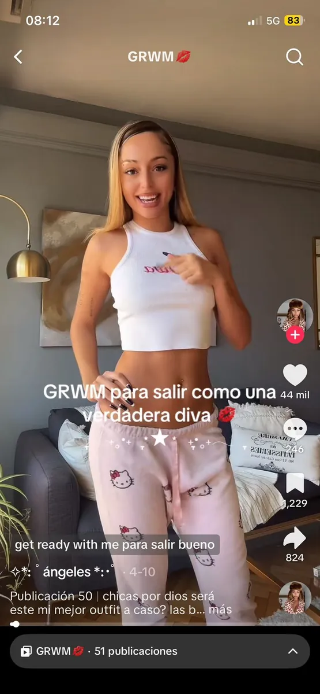
Imagen 7 y 8
Imagen 9 y 10
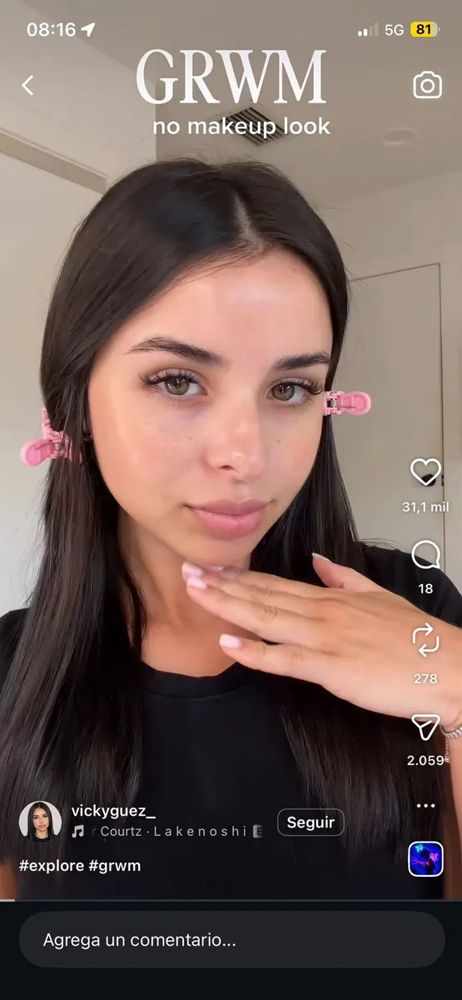
guía de preguntas
https://comunicacionymetodos.com/index.php/cym/article/view/199/142
Cuadro Operacionalización de Variables
Cuadro Operacionalización de Variables
https://canva.link/a8t2l455nrh3rep
| Variable | Definición conceptual | Definición operacional | Dimensiones | Indicadores | Nivel de medición | Escala de medición | Tipo de escala |
|---|---|---|---|---|---|---|---|
| 1. Contenidos de lifestyle y micro-tendencias | Narrativas audiovisuales digitales que exhiben rutinas, estilos de vida y estéticas particulares (como "Clean Girl" o GRWM) promoviendo estándares visuales. | Frecuencia, tiempo de exposición y tipos de formatos de lifestyle que consumen los estudiantes en las plataformas TikTok e Instagram. | 1. Consumo de plataformas 2. Consumo de formatos específicos | - Frecuencia de visualización de videos GRWM. - Frecuencia de visualización de Hauls. - Frecuencia de consumo de videos "Clean Girl" o Daily Vlogs. | Ordinal Ordinal / Nominal | De frecuencias (Ej: Menos de 1 hora, 1-3 horas, Más de 3 horas) Likert de frecuencia (Nunca, A veces, Casi siempre, Siempre) | Cualitativa ordinal |
| 2. Prácticas estéticas y de moda | Acciones, hábitos de consumo material y adopción de códigos visuales que los jóvenes aplican sobre su indumentaria, rutinas y entorno personal. | Cambios declarados en los hábitos de compra, adopción de vestimenta específica y modificación de rutinas/espacios físicos orientados a la estética digital. | 2. Rutinas estéticas personales 3. Estetización del espacio privado | - Frecuencia de compra de productos/ropa motivada por una tendencia de redes. - Nivel de adopción de rutinas de skincare/maquillaje estilo "Clean Girl". - Frecuencia con la que se ordena/decora el cuarto/entorno con el fin de fotografiarlo o grabarlo. | Ordinal Ordinal Ordinal | Likert de frecuencia (Nunca a Siempre) Likert de grado de adopción Likert de frecuencia | Cualitativa ordinal |
| 3. Identidad digital y validación social (Se desprende de su Hipótesis y Obj. 3) | Proceso mediante el cual los jóvenes construyen y exhiben una imagen curada de su vida para obtener aceptación y sentir pertenencia digital. | Grado de importancia otorgada a la percepción de los demás en redes y el nivel de exhibición voluntaria de la vida privada. | 1. Búsqueda de validación 2.Espectacularización de lo cotidiano | - Grado de acuerdo con la frase: "Me importa que mis seguidores aprueben mi estilo/estética". - Frecuencia de publicación de fotos/videos de rutinas diarias (ej. el café de la mañana, el outfit, el espacio de estudio). | Ordinal Ordinal | Likert de nivel de acuerdo (Totalmente en desacuerdo a Totalmente de acuerdo) De frecuencias | Cualitativa ordinal |
| Hábitos de compra | Patrones de adquisición de productos y bienes materiales de moda y belleza. | Acciones de consumo declaradas, motivadas por la influencia de contenidos digitales. | Comportamiento de consumo | - Frecuencia de compra. - Motivación de la compra (influencia de micro-tendencia). | ordinal | Escala de frecuencia (Nunca, A veces, Frecuentemente, Siempre). | cualitativa ordinal |
| Horas diarias de uso de Tik Tok/Instagram. | Intensidad de la exposición temporal del sujeto a las plataformas seleccionadas. | Cantidad de tiempo promedio por día que el usuario dedica a navegar en estas redes. | Intensidad de uso | Tiempo de permanencia diaria | ordinal | Menos de 1 hora; Entre 1 y 3 horas; Entre 3 y 5 horas; Más de 5 horas. | Cualitativa ordinal |
| Facultad | Unidad académica de pertenencia del estudiante dentro de la universidad. | Tiempo transcurrido desde el nacimiento expresado en años. | institucional | Carrera / Facultad de pertenencia. | Nominal | Listado de facultades (ej. Arquitectura y Diseño, Cs. de la Comunicación, etc.) | Cualitativa nominal |
| Edad | Edad cronológica declarada por el encuestado dentro del rango de interés. | cronológica | Años cumplidos. | De razón | 18-24 | Cuantitativa discreta | |
Borradores
Ruta Metodológica
La ruta metodológica elegida es mixta, puesto que las técnicas a utilizar son el análisis de contenido en redes sociales y los grupos focales, los cuales pertenecen al método cualitativo, y la encuesta, correspondiente al método cuantitativo.
En este trabajo, se empleó un diseño descriptivo y exploratorio, debido a que la investigación se centra en registrar, detallar y analizar cómo influye la exposición a las narrativas visuales de lifestyle y micro-tendencias en la adopción de nuevas prácticas de consumo estético y en la gestión de la identidad personal, un fenómeno emergente y poco explorado en el ámbito académico local en jóvenes universitarios.
En primer lugar, en el análisis de contenido se utilizará como instrumento una matriz de registro de publicaciones audiovisuales en las plataformas de TikTok e Instagram. Se realizará un análisis de redes sociales viendo cómo se configuran e interactúan los formatos de contenidos de lifestyle dominantes, específicamente los videos de Get Ready With Me (GRWM), hauls y daily vlogs. El foco de esta observación estará puesto en identificar los códigos estéticos, visuales y discursivos predominantes (tales como paletas de colores neutros, lógicas de orden, marcas específicas de skincare o indumentaria y discursos asociados a la productividad y el minimalismo) que caracterizan a la tendencia Clean Girl. Esto permitirá comprender de qué manera se construyen estas narrativas visuales antes de evaluar su recepción en los usuarios.
Como complemento cualitativo para profundizar en la subjetividad, se empleará la técnica de grupos focales (focus groups). El instrumento para esta técnica será una guía de pautas o preguntas semiestructuradas, con el propósito de generar un espacio de debate e interacción directa donde los jóvenes expresen los sentidos que le otorgan a estas tendencias. A través de las sesiones, se buscará determinar si la adopción de estas micro-tendencias responde a una búsqueda genuina de diferenciación, a una performance de su privacidad para el algoritmo o a una necesidad de validación social y pertenencia dentro de su entorno digital y de pares.
En segundo lugar, el método cuantitativo seleccionado para la investigación fue la encuesta. Se decidió utilizar esta forma de investigación con el propósito de recolectar datos estadísticos generalizables dentro de nuestro ámbito de estudio, y así medir la frecuencia de consumo de estos formatos audiovisuales y cuantificar los cambios reales en los hábitos de compra y en la transformación de sus espacios privados con fines de exhibición digital. El instrumento elegido fue el cuestionario escrito, el cual se administrará de manera digital. El universo adoptado fue la Universidad de la Empresa (UADE). La población quedó delimitada por estudiantes de la sede Montserrat, de entre 18 y 24 años de edad, tanto hombres como mujeres. Como muestra se estableció alcanzar como mínimo cien respuestas. Cabe destacar que esta encuesta no va a ser probabilística ni estrictamente representativa de toda la juventud, sin embargo, funciona como un diagnóstico robusto para mapear las tendencias de consumo y construcción de imagen personal en este segmento universitario específico.
Se optó por elegir este universo y recortar geográficamente la investigación en la sede de UADE Montserrat debido a que esta localización congrega a una amplia diversidad de estudiantes residentes tanto de la Ciudad Autónoma de Buenos Aires (CABA) como de diferentes zonas del Área Metropolitana de Buenos Aires (AMBA). Al ser una población concentrada y de difícil acceso de forma aleatoria para fines académicos, se emplea la técnica de muestreo por bola de nieve para distribuir el cuestionario y recolectar los datos dentro de la comunidad universitaria. Finalmente, en el cuestionario se solicitará el consentimiento informado de los participantes, advirtiéndoles explícitamente que sus respuestas anónimas serán procesadas de forma agregada, ética y respetuosa con fines estrictamente académicos para este Trabajo Práctico Grupal de la materia Metodología de la Investigación en Comunicación.
Fichas de analisis Documental
Ficha 1
| Campo | Datos de la publicación |
|---|---|
| ID (identificación) | P1 |
| Plataforma | Tik Tok |
| Cuenta/Creadora | @andreaiescorcia |
| Fecha de Publicación | 06/03/2026 |
| Reproducciones | 860.100 |
| Likes | 234.600 |
| Comentarios | 291 |
| Formato | GRWM/vlog |
| Códigos Estéticos | Paleta de colores pastel, predominio del rosa y blanco. Indumentaria en 3 momentos: inicio del video con pijamas a rayas, luego set deportivo amarillo pastel para actividad física (pilates) y ropa "basic" para el resto del día. Puesta en escena cuidada y luminosa, coherente con los estándares visuales de la estética Clean Girl. |
| Códigos Visuales | Estilo de grabación cercano al formato YouTube (planos más largos, ritmo pausado). Iluminación natural o simulada, que refuerza la sensación de cotidianeidad. |
| Códigos Discursivos | Texto en pantalla utilizado como recurso narrativo para marcar horarios y ubicaciones (ej: estudio de pilates). Construcción de una rutina diaria ordenada y aspiracional. |
| Mención de marcas/productos | No |
| Observaciones | El video construye una narrativa de "día productivo y equilibrado" que articula actividad física, estética personal y organización del tiempo, ideas centrales de la estética Clean Girl. |
Ficha 2
| Campo | Datos de la publicación |
|---|---|
| ID (identificación) | P2 |
| Plataforma | Tik Tok |
| Cuenta/Creadora | @lizbethponceh |
| Fecha de Publicación | 20/10/2025 |
| Reproducciones | 204.000 |
| Likes | 23.100 |
| Comentarios | 234 |
| Formato | GRWM |
| Códigos Estéticos | Paleta de colores bicolor: negro (outfit) y blanco (fondo). Indumentaria elegante y de marcas reconocidas, orientada a un evento social específico (recital). Estética que mezcla lo minimalista con lo glamoroso, manteniendo la lógica de producción del GRWM |
| Códigos Visuales | Fondo blanco neutro que centra la atención en la creadora y su outfit. Encuadre medio-corto. Texto en pantalla únicamente al inicio para presentar el formato (#GRWM). |
| Códigos Discursivos | Texto en pantalla únicamente al inicio para presentar el formato (#GRWM) |
| Mención de marcas/productos | Si: vestido Meshki, medias Target, perfume Juliette Has a Gun |
| Observaciones | A diferencia del P1, este video integra de manera explícita el consumo de marcas dentro de la narrativa del GRWM, lo que lo acerca al marketing de influencers. La elección del evento (recital de Alejandro Fernández) ancla el contenido en una identidad cultural latinoamericana específica. |
Ficha 3
| Campo | Datos de la publicación |
|---|---|
| ID (identificación) | P3 |
| Plataforma | Tik Tok |
| Cuenta/Creadora | @paaulizi |
| Fecha de Publicación | 28/03/2026 |
| Reproducciones | 394.000 |
| Likes | 62.200 |
| Comentarios | 139 |
| Formato | GRWM |
| Códigos Estéticos | Paleta bicolor: negro (outfit y uñas) y blanco (fondo). Indumentaria oscura y sobria. Estética más cotidiana y menos aspiracional que P1 y P2, centrada en la autenticidad del relato personal. |
| Códigos Visuales | Fondo blanco neutro. Subtítulos en español integrados al video como recurso de accesibilidad y dinamismo visual. Sin texto decorativo adicional. |
| Códigos Discursivos | Narración en primera persona sobre la vida cotidiana de la creadora (curso de azafata, preparación para un examen). Sin mención de marcas. El video apela a la identificación y empatía de la audiencia a través de experiencias compartidas (el estrés del estudio, los logros personales). |
| Mención de marcas/productos | No |
| Observaciones | Este video representa una variante del GRWM más centrada en el relato vital que en el consumo estético. La ausencia de marcas y el foco en la experiencia personal construyen una sensación de autenticidad que, paradójicamente, también es una estrategia discursiva del formato. |
Ficha 4
| Campo | Datos de la publicación |
|---|---|
| ID (identificación) | P4 |
| Plataforma | Tik Tok |
| Cuenta/Creadora | @guiua |
| Fecha de Publicación | 17/11/2025 |
| Reproducciones | 148.500 |
| Likes | 17.400 |
| Comentarios | 62 |
| Formato | GRWM |
| Códigos Estéticos | Predominio del rosa fuerte tanto en la vestimenta como en las uñas, creando una estética vibrante. La puesta en escena integra el armado del neceser de viaje como elemento narrativo visual, dotando al video de dinamismo y practicidad. |
| Códigos Visuales | Sin texto en pantalla ni voz en off. La narrativa se sostiene únicamente a través de la imagen y el relato oral del creador |
| Códigos Discursivos | Narración en primera persona centrada en vivencias personales (preparándose para un viaje a Seúl, Corea). Sin mención de marcas ni productos específicos. El video construye una narrativa aspiracional basada en la experiencia de vida y el viaje internacional, apelando a la identificación de una audiencia joven con aspiraciones globales. |
| Mención de marcas/productos | No |
| Observaciones | El video combina el formato GRWM con el género del travel vlog, ampliando la narrativa estética hacia un horizonte de movilidad y experiencia cultural. |
Ficha 5
| Campo | Datos de la publicación |
|---|---|
| ID (identificación) | P5 |
| Plataforma | Tik Tok |
| Cuenta/Creadora | @angwatters |
| Fecha de Publicación | 10/4/2026 |
| Reproducciones | 185.700 |
| Likes | 44.000 |
| Comentarios | 248 |
| Formato | GRWM |
| Códigos Estéticos | Paleta que combina negro y gama de rosas. Estética maximalista y ostentosa, opuesta al minimalismo de la Clean Girl: vestimentas llamativas, joyas con estampado leopardo, boina y carteras negras. La puesta en escena prioriza el impacto visual por sobre la sobriedad. |
| Códigos Visuales | Texto en pantalla utilizado puntualmente para destacar la mención de la marca de botas. Planos que muestran los productos adquiridos (dos modelos de botas). |
| Códigos Discursivos | Mención explícita de la marca de botas Baag (@baagoficial en Instagram), con recomendación directa basada en precio y diseño. El video integra la promoción de marca de manera orgánica dentro del relato del GRWM, funcionando como publicidad nativa. La recomendación se construye desde la experiencia personal ("me compré dos modelos"), lo que le otorga credibilidad y cercanía. |
| Mención de marcas/productos | Sí: botas Baag (@baagoficial) |
| Observaciones | Este video representa una variante maximalista del GRWM, contrastando con la estética minimalista de P1 y la sobriedad de P3. La integración de la recomendación de marca dentro del relato cotidiano es un ejemplo claro de marketing de influencers en formato nativo, similar a lo observado en P2. |
Ficha 6
| Campo | Datos de la publicación |
|---|---|
| ID (identificación) | P6 |
| Plataforma | |
| Cuenta/Creadora | @luni_gomezz |
| Fecha de Publicación | 19/2/2026 |
| Reproducciones | 218.000 |
| Likes | 18.200 |
| Comentarios | 30 |
| Formato | GRWM |
| Códigos Estéticos | Predominio del blanco en las prendas, generando una imagen limpia, luminosa y minimalista coherente con los estándares de la estética Clean Girl. La elección cromática refuerza una apariencia de naturalidad cuidada. |
| Códigos Visuales | Planos centrados en la creadora durante el proceso de preparación. La iluminación y el fondo neutro priorizan la visibilidad del outfit y del maquillaje. La edición acompaña el ritmo del relato oral sin interrupciones bruscas. |
| Códigos Discursivos | Narración en primera persona sobre vivencias personales y sentimentales (relación con su ex, asistir a verlo jugar al fútbol). El contenido emocional y cotidiano genera una fuerte sensación de intimidad y cercanía con la audiencia, característica central del formato GRWM. La ausencia de promoción explícita de marcas refuerza la percepción de autenticidad. |
| Mención de marcas/productos | No de manera explícita, aunque se visualizan productos de maquillaje de la línea Multitasker de Rimmel. |
| Observaciones | La combinación de estética minimalista (blanco, Clean Girl) con un relato sentimental cotidiano maximiza la identificación de la audiencia joven y construye una sensación de "amiga que te cuenta su vida", estrategia discursiva muy efectiva en Instagram Reels. |
Ficha 7
| Campo | Datos de la publicación |
|---|---|
| ID (identificación) | P7 |
| Plataforma | |
| Cuenta/Creadora | @canddegallo |
| Fecha de Publicación | 16/5/2025 |
| Reproducciones | 549.000 |
| Likes | 38.300 |
| Comentarios | 117 |
| Formato | GRWM |
| Códigos Estéticos | Paleta de colores pasteles que refuerza directamente la estética Clean Girl: tonos suaves, luminosos y naturales tanto en el fondo como en los productos utilizados. La rutina de maquillaje mostrada apunta a un resultado de "piel de cristal" con efecto natural, característica central de la tendencia. |
| Códigos Visuales | Video de formato corto. Edición dinámica y rítmica sincronizada con la música de fondo, sin narración oral. Planos cortos que alternan entre el rostro de la creadora y las imágenes de los productos utilizados. El uso de imágenes de los productos (como el bronzer Hoola) como recurso visual genera un ritmo ágil propio del contenido de belleza en redes. |
| Códigos Discursivos | Ausencia total de narración oral. El único texto en pantalla es el título "Another GRWM", lo que sugiere que el formato es recurrente en el perfil de la creadora y que la audiencia ya lo reconoce. La comunicación se construye exclusivamente a través de lo visual y lo musical, apelando a una estética sensorial antes que a un relato personal. |
| Mención de marcas/productos | Sí: bronzer Hoola (Benefit Cosmetics), Charlotte Tilbury Magic Cream, delineador L'Oréal Paris, corrector YSL, labial Rhode. |
| Observaciones | Este video representa una variante del GRWM orientada exclusivamente a lo estético-visual, sin componente narrativo personal. A diferencia de P3, P4 y P6 donde el relato vital es central, aquí el foco está puesto en los productos y en la construcción de una imagen aspiracional a través de la música y el ritmo de edición. La aparición del bronzer Hoola de Benefit constituye una mención de marca implícita que, aunque no es verbalizada, cumple una función de visibilidad comercial dentro del contenido. |
Ficha 8
| Campo | Datos de la publicación |
|---|---|
| ID (identificación) | P8 |
| Plataforma | |
| Cuenta/Creadora | @selemosca |
| Fecha de Publicación | 25/05/2026 |
| Reproducciones | 410.000 |
| Likes | 18.300 |
| Comentarios | 37 |
| Formato | GURWM (lo mismo que el get ready with me pero invertido) |
| Códigos Estéticos | Estética casera y cotidiana, sin producción visual forzada ni intento deliberado de construir una imagen "aesthetic". La ausencia de una paleta cromática cuidada y la multiplicidad de espacios domésticos (entrada del departamento, baño, desayunador) generan una sensación de autenticidad y cercanía poco frecuente en el género. El "desarreglo" progresivo de la creadora funciona como contranarrativa respecto a los estándares visuales habituales del GRWM. |
| Códigos Visuales | Planos que recorren distintos espacios del departamento, acompañando el recorrido físico de la creadora luego del trabajo. Texto en pantalla utilizado para remarcar momentos clave del relato ("seguime", "rutina post trabajar de noche"). La presencia de sonidos ambiente refuerza la dimensión doméstica y no producida del video. |
| Códigos Discursivos | Narración oral en primera persona combinada con sonidos ambientes, lo que amplifica la sensación de estar "en tiempo real" con la creadora. Sin mención de marcas ni productos. El texto en pantalla cumple una función tanto narrativa como de llamado a la acción ("seguime"). La propuesta discursiva se construye desde la identificación con el cansancio y la rutina post laboral, apelando directamente a una audiencia joven trabajadora. |
| Mención de marcas/productos | No |
| Observaciones | Este video es particularmente relevante para el análisis porque representa una variante invertida del formato GRWM: el "Get Unready With Me" deconstruye la lógica aspiracional del género al mostrar el proceso de desarreglo en lugar del arreglo. Sin embargo, paradójicamente, esta apuesta por la autenticidad y lo no producido también constituye una estrategia discursiva consciente, ya que la "espontaneidad" está igualmente editada y publicada para una audiencia. Contrasta fuertemente con P1, P2 y P7 en términos de producción visual, pero comparte con P3 y P6 la centralidad del relato personal por sobre el consumo estético. |
Ficha 9
| Campo | Datos de la publicación |
|---|---|
| ID (identificación) | P9 |
| Plataforma | |
| Cuenta/Creadora | @vickyguez_ |
| Fecha de Publicación | 25/05/2026 |
| Reproducciones | 382.000 |
| Likes | 31.000 |
| Comentarios | 18 |
| Formato | GRWM |
| Códigos Estéticos | Estética sumamente pulcra y minimalista, representativa de la Clean Girl en su expresión más pura. Paleta bicolor de negro (ropa) y blanco (fondo), sin elementos distractores. El pelo prolijo y la ropa oscura contrastan con el fondo claro, generando una imagen ordenada y visualmente equilibrada. La rutina de maquillaje apunta a un resultado natural y cuidado, coherente con los estándares de la tendencia. |
| Códigos Visuales | Encuadre medio corto que muestra a la creadora únicamente hasta los hombros, concentrando la atención en el rostro y el proceso de maquillaje. Cortes limpios y precisos entre planos, sin transiciones llamativas. Música de fondo como único elemento sonoro. Sin texto en pantalla ni narración oral, lo que otorga al video una calidad casi contemplativa. |
| Códigos Discursivos | Comunicación exclusivamente visual, sin narración ni texto. La ausencia de palabras desplaza toda la carga comunicativa hacia la imagen, apelando a una estética sensorial pura. Sin mención de marcas ni productos. El silencio narrativo refuerza la sensación de naturalidad y simpleza propia de la Clean Girl. |
| Mención de marcas/productos | No |
| Observaciones | Este video constituye uno de los ejemplos más representativos y "puros" de la estética Clean Girl dentro del corpus: minimalismo cromático, prolijidad, ausencia de ruido visual y narrativo, y foco exclusivo en la rutina de maquillaje cotidiana. Contrasta fuertemente con la estética maximalista de P5 y con la autenticidad casera de P8, y comparte con P7 la lógica de comunicación visual sin narración oral. Su alto nivel de producción implícita (fondo neutro, iluminación, cortes limpios) demuestra que la "simplicidad" de la Clean Girl es en realidad una construcción estética cuidadosamente elaborada. |
Ficha 10
| Campo | Datos de la publicación |
|---|---|
| ID (identificación) | P10 |
| Plataforma | |
| Cuenta/Creadora | @chiaaarita._ |
| Fecha de Publicación | 25/05/2026 |
| Reproducciones | 516.000 |
| Likes | 9.552 |
| Comentarios | 19 |
| Formato | Vlog del dia/GRWM |
| Códigos Estéticos | Estética variada y dinámica propia del formato vlog, que recorre distintos escenarios y actividades del día (estudio, paseo con perros, skincare, grabación de contenido). No hay una paleta cromática unificada sino que los colores varían según el espacio y la actividad mostrada. La "romantización" de la rutina cotidiana funciona como hilo conductor estético: cada actividad, por mundana que sea, es presentada de manera visualmente atractiva y aspiracional. |
| Códigos Visuales | Planos variados que acompañan el recorrido de actividades del día. Texto en pantalla utilizado como títulos para enunciar y organizar cada momento de la rutina. Sin narración adicional más allá del relato oral de la creadora. La estructura temporal explícita (horarios) organiza visualmente el video y refuerza la imagen de productividad y organización. |
| Códigos Discursivos | Narración en primera persona detallada y cronológica, con mención explícita de horarios y actividades. El relato construye una narrativa de "día productivo romantizado": estudiar para exámenes de ingreso, hacer prácticas online, sacar los perros, cuidar la piel y crear contenido se presentan como partes de una vida plena y deseable. Sin mención de marcas ni productos específicos. La apelación al aspiracionismo se construye desde lo cotidiano y lo alcanzable, no desde el lujo. |
| Mención de marcas/productos | No |
| Observaciones | Este video cierra el corpus con una de las expresiones más características del lifestyle digital contemporáneo: la romantización de la vida cotidiana. A diferencia de los GRWM centrados en el maquillaje (P7, P9) o en eventos específicos (P2, P4), este vlog propone una narrativa integral del día que articula productividad, autocuidado y creación de contenido como pilares de una identidad aspiracional. La mención explícita de horarios y la variedad de actividades lo acercan al género del "day in my life", reforzando la lógica de espectacularización de lo cotidiano. |
Tabla de varaiables
Variables sociodemográficas
Edad
JASP
| Frequencies for ¿Cuántos años tenés? | ||||
|---|---|---|---|---|
| ¿Cuántos años tenés? | Frequency | Percent | Valid Percent | Cumulative Percent |
| 18-20 años | 152 | 69.7 | 69.7 | 69.7 |
| 21-23 años | 57 | 26.1 | 26.1 | 95.9 |
| 24-25 años | 9 | 4.1 | 4.1 | 100.0 |
| Missing | 0 | 0.0 | ||
| Total | 218 | 100.0 |
Facultad
JASP
| Frequencies for ¿En qué facultad estudias? | ||||
|---|---|---|---|---|
| ¿En qué facultad estudias? | Frequency | Percent | Valid Percent | Cumulative Percent |
| FACE | 41 | 18.8 | 18.8 | 18.8 |
| FACO | 66 | 30.3 | 30.3 | 49.1 |
| FADI | 73 | 33.5 | 33.5 | 82.6 |
| FAIN | 17 | 7.8 | 7.8 | 90.4 |
| FAJU | 14 | 6.4 | 6.4 | 96.8 |
| FASA | 7 | 3.2 | 3.2 | 100.0 |
| Missing | 0 | 0.0 | ||
| Total | 218 | 100.0 |
Variables de estudio
Tabla 3: Horas de uso diario de Tik Tok/Instagram
JASP
| Frequencies for ¿Cuántas horas por día usás TikTok o Instagram en promedio? | ||||
|---|---|---|---|---|
| ¿Cuántas horas por día usás TikTok o Instagram en promedio? | Frequency | Percent | Valid Percent | Cumulative Percent |
| Entre 1 y 3 horas | 113 | 51.8 | 51.8 | 51.8 |
| Entre 3 y 5 horas | 76 | 34.9 | 34.9 | 86.7 |
| Menos de 1 hora | 13 | 6.0 | 6.0 | 92.7 |
| Más de 5 horas | 16 | 7.3 | 7.3 | 100.0 |
| Missing | 0 | 0.0 | ||
| Total | 218 | 100.0 |
Tabla 4: Frecuencia de consumo de videos GRWM
JASP
| Frequencies for ¿Con qué frecuencia ves videos tipo GRWM (""Get Ready With Me"") en TikTok o Instagram? | ||||
|---|---|---|---|---|
| ¿Con qué frecuencia ves videos tipo GRWM (""Get Ready With Me"") en TikTok o Instagram? | Frequency | Percent | Valid Percent | Cumulative Percent |
| A veces | 107 | 49.1 | 49.1 | 49.1 |
| Casi nunca | 23 | 10.6 | 10.6 | 59.6 |
| Casi siempre | 65 | 29.8 | 29.8 | 89.4 |
| Nunca | 7 | 3.2 | 3.2 | 92.7 |
| Siempre | 16 | 7.3 | 7.3 | 100.0 |
| Missing | 0 | 0.0 | ||
| Total | 218 | 100.0 |
Tabla 5: Adopción de rutinas Clean Girl
JASP
| Frequencies for ¿Adoptaste rutinas de skincare o maquillaje inspiradas en el estilo ""Clean Girl"" o tendencias similares de redes? | ||||
|---|---|---|---|---|
| ¿Adoptaste rutinas de skincare o maquillaje inspiradas en el estilo ""Clean Girl"" o tendencias similares de redes? | Frequency | Percent | Valid Percent | Cumulative Percent |
| Adopté algo | 111 | 50.9 | 50.9 | 50.9 |
| Adopté bastante | 44 | 20.2 | 20.2 | 71.1 |
| Adopté casi todo | 3 | 1.4 | 1.4 | 72.5 |
| No adopté nada | 60 | 27.5 | 27.5 | 100.0 |
| Missing | 0 | 0.0 | ||
| Total | 218 | 100.0 |
Tabla 6: Artículos comprados motivados por tendencias en redes
JASP
| Frequencies for Pensando en los últimos 6 meses, ¿aproximadamente cuántos artículos (ropa, accesorios, maquillaje o skincare) compraste motivado/a por una tendencia que viste en redes sociales? | ||||
|---|---|---|---|---|
| Pensando en los últimos 6 meses, ¿aproximadamente cuántos artículos (ropa, accesorios, maquillaje o skincare) compraste motivado/a por una tendencia que viste en redes sociales? | Frequency | Percent | Valid Percent | Cumulative Percent |
| 0 artículos (ninguno) | 25 | 11.5 | 11.5 | 11.5 |
| 1 a 2 artículos | 92 | 42.2 | 42.2 | 53.7 |
| 3 a 5 artículos | 60 | 27.5 | 27.5 | 81.2 |
| 6 o más artículos | 41 | 18.8 | 18.8 | 100.0 |
| Missing | 0 | 0.0 | ||
| Total | 218 | 100.0 |
Tabla 7: Motivación principal de compra
JASP
| Frequencies for Cuando comprás ropa o productos de belleza, ¿cuál es tu principal motivación? | ||||
|---|---|---|---|---|
| Cuando comprás ropa o productos de belleza, ¿cuál es tu principal motivación? | Frequency | Percent | Valid Percent | Cumulative Percent |
| 1 y 2 | 1 | 0.5 | 0.5 | 0.5 |
| Era una tendencia que estaba ""de moda"" | 25 | 11.5 | 11.5 | 12.0 |
| Generalmente mi decisión es tomada en el momento sin demasiada influencia de las redes | 1 | 0.5 | 0.5 | 12.4 |
| La compra fue por decisión propia, sin influencia de redes | 64 | 29.4 | 29.5 | 41.9 |
| Lo vi en TikTok o Instagram y me gustó | 84 | 38.5 | 38.7 | 80.6 |
| Una persona que sigo lo usó o recomendó | 39 | 17.9 | 18.0 | 98.6 |
| la primera y la ultima, o por verlo en redes o por gusto personal | 1 | 0.5 | 0.5 | 99.1 |
| lo vi en pinterest y me gustó | 1 | 0.5 | 0.5 | 99.5 |
| me lo recomiendan amigas o familiares | 1 | 0.5 | 0.5 | 100.0 |
| Missing | 1 | 0.5 | ||
| Total | 218 | 100.0 |
Tabla 8: Validación social en redes
JASP
| Frequencies for ""Me importa que mis seguidores aprueben mi estilo o estética en redes."" | ||||
|---|---|---|---|---|
| ""Me importa que mis seguidores aprueben mi estilo o estética en redes."" | Frequency | Percent | Valid Percent | Cumulative Percent |
| De acuerdo | 41 | 18.8 | 18.8 | 18.8 |
| En desacuerdo | 44 | 20.2 | 20.2 | 39.0 |
| Ni de acuerdo ni en desacuerdo | 79 | 36.2 | 36.2 | 75.2 |
| Totalmente de acuerdo | 17 | 7.8 | 7.8 | 83.0 |
| Totalmente en desacuerdo | 37 | 17.0 | 17.0 | 100.0 |
| Missing | 0 | 0.0 | ||
| Total | 218 | 100.0 |
Cruces de variables
Tabla 9: Cruce de edad y adopción de rutinas “Clean Girl”
JASP
| Contingency Tables | |||||
|---|---|---|---|---|---|
| ¿Adoptaste rutinas de skincare o maquillaje inspiradas en el estilo ""Clean Girl"" o tendencias similares de redes? | |||||
| ¿Cuántos años tenés? | Adopté algo | Adopté bastante | Adopté casi todo | No adopté nada | Total |
| 18-20 años | 78 | 30 | 2 | 42 | 152 |
| 21-23 años | 30 | 12 | 1 | 14 | 57 |
| 24-25 años | 3 | 2 | 0 | 4 | 9 |
| Total | 111 | 44 | 3 | 60 | 218 |
| Note. Each cell displays the observed co |
Tabla 10: Cruce de edad y articulos comprados motivados por redes
JASP
| Contingency Tables | |||||
|---|---|---|---|---|---|
| Pensando en los últimos 6 meses, ¿aproximadamente cuántos artículos (ropa, accesorios, maquillaje o skincare) compraste motivado/a por una tendencia que viste en redes sociales? | |||||
| ¿Cuántos años tenés? | 0 artículos (ninguno) | 1 a 2 artículos | 3 a 5 artículos | 6 o más artículos | Total |
| 18-20 años | 19 | 67 | 39 | 27 | 152 |
| 21-23 años | 4 | 22 | 20 | 11 | 57 |
| 24-25 años | 2 | 3 | 1 | 3 | 9 |
| Total | 25 | 92 | 60 | 41 | 218 |
| Note. Each cell displays the observed counts |
Tabla 11: Cruce entre horas de uso y articulos comprados motivados por redes JASp
| Contingency Tables | |||||
|---|---|---|---|---|---|
| Pensando en los últimos 6 meses, ¿aproximadamente cuántos artículos (ropa, accesorios, maquillaje o skincare) compraste motivado/a por una tendencia que viste en redes sociales? | |||||
| ¿Cuántas horas por día usás TikTok o Instagram en promedio? | 0 artículos (ninguno) | 1 a 2 artículos | 3 a 5 artículos | 6 o más artículos | Total |
| Entre 1 y 3 horas | 14 | 49 | 33 | 17 | 113 |
| Entre 3 y 5 horas | 5 | 28 | 24 | 19 | 76 |
| Menos de 1 hora | 6 | 5 | 1 | 1 | 13 |
| Más de 5 horas | 0 | 10 | 2 | 4 | 16 |
| Total | 25 | 92 | 60 | 41 | 218 |
| Note. Each cell displays the observed counts |
Tabla 12: Cruce entre horas de uso y adopción de rutinas Clean Girl JASP
| Contingency Tables | |||||
|---|---|---|---|---|---|
| ¿Adoptaste rutinas de skincare o maquillaje inspiradas en el estilo ""Clean Girl"" o tendencias similares de redes? | |||||
| ¿Cuántas horas por día usás TikTok o Instagram en promedio? | Adopté algo | Adopté bastante | Adopté casi todo | No adopté nada | Total |
| Entre 1 y 3 horas | 65 | 15 | 0 | 33 | 113 |
| Entre 3 y 5 horas | 33 | 23 | 3 | 17 | 76 |
| Menos de 1 hora | 5 | 0 | 0 | 8 | 13 |
| Más de 5 horas | 8 | 6 | 0 | 2 | 16 |
| Total | 111 | 44 | 3 | 60 | 218 |
| Note. Each cell displays the observed counts |
Tabla 13: Cruce entre frecuencia de consumo GRWM y motivacion de compra
JASP
| Contingency Tables | ||||||||||
|---|---|---|---|---|---|---|---|---|---|---|
| Cuando comprás ropa o productos de belleza, ¿cuál es tu principal motivación? | ||||||||||
| ¿Con qué frecuencia ves videos tipo GRWM (""Get Ready With Me"") en TikTok o Instagram? | 1 y 2 | Era una tendencia que estaba ""de moda"" | Generalmente mi decisión es tomada en el momento sin demasiada influencia de las redes | La compra fue por decisión propia, sin influencia de redes | Lo vi en TikTok o Instagram y me gustó | Una persona que sigo lo usó o recomendó | la primera y la ultima, o por verlo en redes o por gusto personal | lo vi en pinterest y me gustó | me lo recomiendan amigas o familiares | Total |
| A veces | 1 | 15 | 1 | 29 | 41 | 18 | 0 | 1 | 0 | 106 |
| Casi nunca | 0 | 1 | 0 | 8 | 9 | 4 | 1 | 0 | 0 | 23 |
| Casi siempre | 0 | 8 | 0 | 17 | 25 | 14 | 0 | 0 | 1 | 65 |
| Nunca | 0 | 0 | 0 | 5 | 2 | 0 | 0 | 0 | 0 | 7 |
| Siempre | 0 | 1 | 0 | 5 | 7 | 3 | 0 | 0 | 0 | 16 |
| Total | 1 | 25 | 1 | 64 | 84 | 39 | 1 | 1 | 1 | 217 |
| Note. Each cell displays the observed counts |
Tabla 14: Cruce entre validación social y articulos comprados motivados por redes
JASP
| Contingency Tables | |||||
|---|---|---|---|---|---|
| Pensando en los últimos 6 meses, ¿aproximadamente cuántos artículos (ropa, accesorios, maquillaje o skincare) compraste motivado/a por una tendencia que viste en redes sociales? | |||||
| ""Me importa que mis seguidores aprueben mi estilo o estética en redes."" | 0 artículos (ninguno) | 1 a 2 artículos | 3 a 5 artículos | 6 o más artículos | Total |
| De acuerdo | 5 | 12 | 13 | 11 | 41 |
| En desacuerdo | 5 | 21 | 10 | 8 | 44 |
| Ni de acuerdo ni en desacuerdo | 5 | 39 | 23 | 12 | 79 |
| Totalmente de acuerdo | 0 | 6 | 5 | 6 | 17 |
| Totalmente en desacuerdo | 10 | 14 | 9 | 4 | 37 |
| Total | 25 | 92 | 60 | 41 | 218 |
| Note. Each cell displays the observed counts |